2주차 필독 자료 정리 · 영문 / 한국어 (English / Korean)
Sources: [Clements10] Documenting Software Architectures, 2nd ed. · [Bianco07] Evaluating a SOA · [Vernon21] Hexagonal & EDA · [Bass21] / [Bass13] (Plug-in, MVC) · [Hohpe03] Enterprise Integration Patterns · [Merson21] Microservices (IDEALS) · [Millett15] DDD (optional)
This summary covers the foundational concepts from the Prologue and Chapter 1 of Documenting Software Architectures. The Prologue defines software architecture as the set of structures (elements, relations, and properties) needed to reason about a system, and introduces the central idea that documenting an architecture means documenting the relevant views plus cross-view information. Chapter 1 then applies these ideas to module views, which describe how a system's software is partitioned into implementation units and how those units relate to one another.
이 요약은 『Documenting Software Architectures』 프롤로그와 1장의 기초 개념을 다룬다. 프롤로그는 소프트웨어 아키텍처를 시스템을 추론하는 데 필요한 구조들의 집합(요소, 관계, 속성)으로 정의하고, 아키텍처 문서화란 관련 뷰(view)들과 뷰를 가로지르는 정보를 문서화하는 것이라는 핵심 개념을 소개한다. 이어 1장은 이러한 개념을 모듈 뷰에 적용하여, 시스템 소프트웨어가 구현 단위로 어떻게 분할되고 그 단위들이 서로 어떻게 관계를 맺는지 설명한다.
Software architecture is roughly the prudent partitioning of a whole into parts with specific relations among them. This partitioning lets distributed groups of people work cooperatively to solve a problem larger than any could solve alone, with each group interacting through carefully crafted interfaces that expose only the minimal, most stable information needed. Formally, the architecture of a computing system is the set of structures needed to reason about the system, comprising software elements, relations among them, and properties of both.
소프트웨어 아키텍처는 대략 전체를 부분으로 신중하게 분할하고 부분 간에 특정한 관계를 부여하는 것이다. 이러한 분할 덕분에 흩어져 있는 사람들의 집단이 협력하여 혼자서는 풀 수 없는 더 큰 문제를 해결할 수 있으며, 각 집단은 상호작용에 필요한 최소한의 가장 안정적인 정보만 드러내는 정교하게 설계된 인터페이스를 통해 소통한다. 공식적으로, 컴퓨팅 시스템의 아키텍처는 시스템을 추론하는 데 필요한 구조들의 집합이며, 소프트웨어 요소, 요소 간 관계, 그리고 둘 모두의 속성으로 구성된다.
A single system is almost inevitably partitioned in several ways simultaneously, and each partitioning produces a distinct architectural structure with different parts and relations, each designed to satisfy the driving quality attribute requirements and key business goals. The larger and more complex the system, the more critical this partitioning becomes. Architecture documentation serves three roles: it helps architects make the right decisions, tells developers how to carry them out, and records the decisions to give future caretakers insight into the architect's solution.
하나의 시스템은 거의 필연적으로 여러 방식으로 동시에 분할되며, 각 분할은 서로 다른 부분과 관계를 가진 별개의 아키텍처 구조를 만들어 낸다. 각 구조는 주요 품질 속성 요구사항과 핵심 비즈니스 목표를 충족하도록 설계된다. 시스템이 크고 복잡할수록 이 분할은 더욱 중요해진다. 아키텍처 문서화는 세 가지 역할을 한다. 아키텍트가 올바른 결정을 내리도록 돕고, 개발자에게 그 결정을 어떻게 실행할지 알려 주며, 미래의 유지보수 담당자에게 아키텍트의 해법에 대한 통찰을 주기 위해 결정을 기록한다.
Perhaps the most important concept in architecture documentation is the view—a representation of a set of system elements and the relationships among them. A software architecture is too complex to describe one-dimensionally (like a bird wing, which needs feather, skeleton, muscular, and circulation views). The most fundamental principle follows: documenting an architecture is a matter of documenting the relevant views and then adding documentation that applies to more than one view.
아키텍처 문서화에서 가장 중요한 개념은 아마도 뷰일 것이다. 뷰란 시스템 요소들의 집합과 그들 사이의 관계를 나타낸 표현이다. 소프트웨어 아키텍처는 한 차원으로 기술하기에 너무 복잡하다(새의 날개가 깃털, 골격, 근육, 순환 등 여러 뷰를 필요로 하는 것처럼). 여기서 가장 기본적인 원칙이 나온다. 아키텍처를 문서화한다는 것은 관련 뷰들을 문서화하고, 둘 이상의 뷰에 걸쳐 적용되는 문서를 덧붙이는 일이다.
Which views are relevant depends on your goals, since different views support different uses and expose different quality attributes to different degrees (a layered view reveals portability; a deployment view supports reasoning about performance and reliability). Hence the book advocates no fixed set of views. The documentation for a view contains a primary presentation (usually graphical), an element catalog, a specification of element interfaces and behavior, a variability guide, and rationale; cross-view documentation adds an introduction with a reader's guide, a description of how views relate, overall constraints and rationale, and management information.
어떤 뷰가 관련 있는지는 목표에 따라 달라진다. 서로 다른 뷰는 서로 다른 용도를 지원하고 서로 다른 정도로 품질 속성을 드러내기 때문이다(계층 뷰는 이식성을, 배포 뷰는 성능과 신뢰성에 대한 추론을 지원한다). 따라서 이 책은 고정된 뷰 집합을 권하지 않는다. 하나의 뷰 문서는 주 표현(보통 그림), 요소 카탈로그, 요소 인터페이스와 행위 명세, 가변성 가이드, 그리고 근거를 담는다. 뷰를 가로지르는 문서에는 독자 안내가 포함된 서론, 뷰들이 서로 어떻게 관계되는지에 대한 설명, 전체 제약과 근거, 그리고 관리 정보가 추가된다.
Documenting a system's module structures means enumerating its principal implementation units (modules) together with the relations among them; these descriptions are called module views. How software is decomposed into manageable units determines how source code is split, what assumptions each unit may make about others' services, and how units aggregate into larger ensembles. Because module structures often determine how a change in one part affects others, they govern a system's modifiability, portability, and reuse. No architecture documentation is likely to be complete without at least one module view.
시스템의 모듈 구조를 문서화한다는 것은 주요 구현 단위인 모듈들과 그들 사이의 관계를 열거하는 것이며, 이러한 기술을 모듈 뷰라고 부른다. 소프트웨어가 관리 가능한 단위로 어떻게 분해되는지는 소스 코드가 어떻게 나뉘는지, 각 단위가 다른 단위의 서비스에 대해 어떤 가정을 할 수 있는지, 그리고 단위들이 더 큰 집합으로 어떻게 모이는지를 결정한다. 모듈 구조는 한 부분의 변경이 다른 부분에 어떻게 영향을 미치는지를 종종 좌우하므로, 시스템의 수정 용이성, 이식성, 재사용성을 지배한다. 적어도 하나의 모듈 뷰 없이는 어떤 아키텍처 문서도 완전하기 어렵다.
Although designers often use module to mean a programming-language unit (a C program, a Java/C# class, a package or namespace), this book adopts a broader definition: a module is an implementation unit of software that provides a coherent set of responsibilities. A module is characterized foremost by enumerating its set of responsibilities—the functionality it provides and the knowledge it maintains. Modules can be aggregated and decomposed, and each module style identifies its own set of modules and applies its own criteria for aggregating or decomposing them (e.g., the layered style aggregates by an allowed-to-use relation, the generalization style by what modules have in common).
설계자들은 모듈이라는 용어를 흔히 프로그래밍 언어 단위(C 프로그램, Java/C# 클래스, 패키지나 네임스페이스)를 가리키는 데 쓰지만, 이 책은 더 넓은 정의를 채택한다. 모듈은 일관된 책임 집합을 제공하는 소프트웨어 구현 단위이다. 모듈은 무엇보다 그 책임 집합—제공하는 기능과 유지하는 지식—을 열거함으로써 특징지어진다. 모듈은 모아지거나 분해될 수 있으며, 각 모듈 스타일은 고유한 모듈 집합을 식별하고 고유한 기준으로 모듈을 모으거나 분해한다(예: 계층 스타일은 allowed-to-use 관계로, 일반화 스타일은 모듈들이 공통으로 가진 것으로 모은다).
Module views use three relation types. Is part of defines a part/whole relationship between a submodule (the part) and an aggregate module (the whole), generally implying simple aggregation. Depends on defines a dependency between two modules; specific forms include uses, allowed to use, crosscuts, and data entity relationships (in the uses, layered, aspect, and data model styles respectively), and a UML class association also depicts dependency. Is a defines a generalization/specialization relationship between a more specific child and a more general parent, where the child can be used wherever the parent is—object-oriented inheritance and interface realization are special cases.
모듈 뷰는 세 가지 관계 유형을 사용한다. Is part of(부분이다)는 하위 모듈(부분)과 집합 모듈(전체) 사이의 부분/전체 관계를 정의하며, 일반적으로 단순한 집합을 의미한다. Depends on(의존한다)은 두 모듈 간의 의존 관계를 정의하며, 구체적 형태로는 uses, allowed to use, crosscuts, 데이터 엔티티 관계 등이 있고(각각 uses, 계층, 애스펙트, 데이터 모델 스타일에서), UML 클래스 연관 또한 의존성을 나타낸다. Is a(~이다)는 더 구체적인 자식과 더 일반적인 부모 사이의 일반화/특수화 관계를 정의하며, 자식은 부모가 쓰이는 모든 곳에서 사용될 수 있다—객체지향 상속과 인터페이스 실체화가 그 특수한 경우이다.
Modeling notations such as UML offer many constructs for representing modules. UML's class construct is the object-oriented specialization of a module, while UML packages represent an aggregation of modules—such as layers, subsystems, and collections of implementation units sharing a namespace. The three native module relations map onto UML notations (e.g., the «use» dependency, the is-part-of relation, and two forms of is-a: class inheritance and interface realization).
UML과 같은 모델링 표기법은 모듈을 나타내는 다양한 구성요소를 제공한다. UML의 클래스 구성요소는 모듈의 객체지향적 특수화이며, UML 패키지는 모듈들의 집합—계층, 서브시스템, 동일한 네임스페이스를 공유하는 구현 단위들의 모음 등—을 나타낸다. 세 가지 고유 모듈 관계는 UML 표기로 대응된다(예: «use» 의존 관계, is-part-of 관계, 그리고 is-a의 두 형태인 클래스 상속과 인터페이스 실체화).
UML was originally created to model object-oriented systems but is now a general-purpose modeling language, so its elements and relations are generic—not tied to specific implementation technologies or platforms. To specialize UML symbols, you can define a stereotype, a UML extension mechanism that defines a new modeling element or relation based on an existing one, shown in diagrams as a label in guillemets («stereotype label»). Used correctly, stereotypes make diagrams more expressive; UML provides standard stereotypes and you can also create your own.
UML은 본래 객체지향 시스템을 모델링하기 위해 만들어졌지만 이제는 범용 모델링 언어이므로, 그 요소와 관계는 특정 구현 기술이나 플랫폼에 묶이지 않은 일반적 성격을 띤다. UML 기호를 특수화하려면 스테레오타입을 정의할 수 있는데, 이는 기존 UML 요소나 관계를 바탕으로 새로운 모델링 요소나 관계를 정의하는 UML 확장 기법으로, 다이어그램에서는 길러멧 안의 라벨(«stereotype label»)로 표시된다. 올바르게 사용하면 스테레오타입은 다이어그램을 더 표현력 있게 만든다. UML은 표준 스테레오타입을 제공하며, 직접 만들 수도 있다.
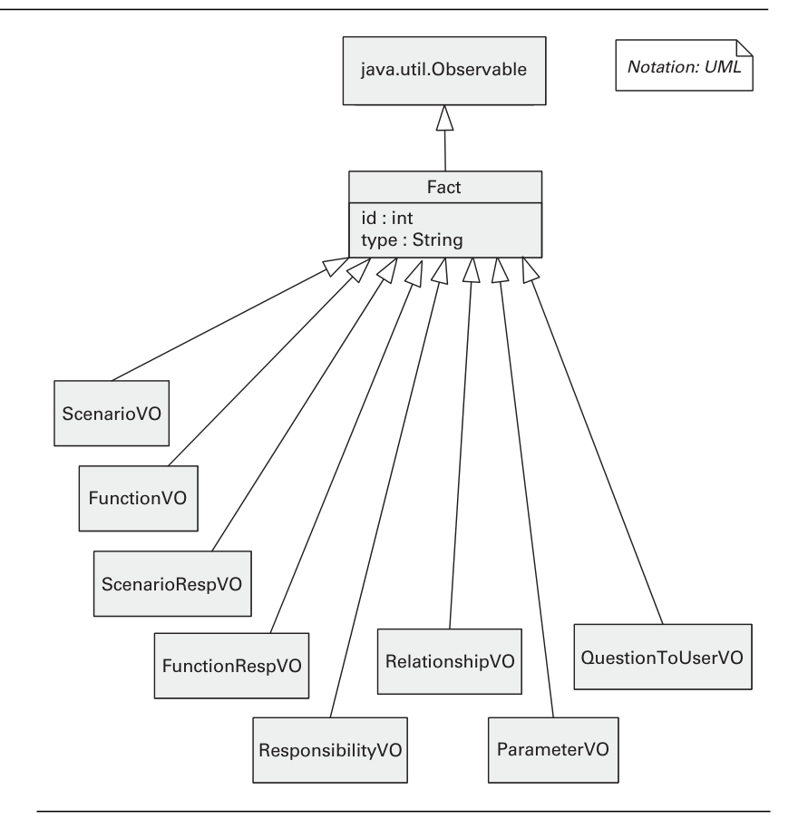
java.util.Observable. UML class inheritance (the hollow triangle) realizes the module is-a relation.UML로 그린 모듈 뷰 — 여러 값 객체 클래스가 공통 Fact 클래스를 특수화하고, Fact는 다시 java.util.Observable을 상속한다. UML 클래스 상속(속 빈 삼각형)이 모듈의 is-a 관계를 실체화한다.[Clements10] Prologue & Chapter 1
Chapter 2 surveys several important module styles, each derived by specializing the generic relations of module views. It covers the decomposition style (the is-part-of relation), the uses style (the depends-on/uses relation), the layered style (the restricted allowed-to-use relation), and the data model style (relations among data entities). For each style the book explains the elements, relations, and properties; what the style is for; notations; and real-system examples.
2장은 여러 중요한 모듈 스타일을 살펴보며, 각 스타일은 모듈 뷰의 일반적인 관계를 특수화하여 도출된다. 분해 스타일(is-part-of 관계), 사용 스타일(depends-on/uses 관계), 계층 스타일(제한된 allowed-to-use 관계), 데이터 모델 스타일(데이터 엔터티 간 관계)을 다룬다. 각 스타일에 대해 요소·관계·속성, 용도, 표기법, 실제 시스템 예시를 설명한다.
The decomposition style arises when we focus the elements and properties of module views on the is-part-of relation. A decomposition view describes the organization of the code as modules and submodules and shows how system responsibilities are partitioned across them. Almost all architects begin here, attacking the problem with divide-and-conquer, and the decomposition view records that campaign. Criteria for decomposing a module include achieving certain quality attributes (e.g., information hiding for modifiability), build-versus-buy decisions, product line implementation (common vs. variable modules), and team allocation.
분해 스타일은 모듈 뷰의 요소와 속성을 is-part-of 관계에 집중시킬 때 나타난다. 분해 뷰는 코드를 모듈과 하위 모듈로 구성한 모습을 기술하고, 시스템 책임이 그 사이에 어떻게 분할되는지 보여준다. 거의 모든 아키텍트가 분할 정복 기법으로 문제에 접근하며 여기서 시작하고, 분해 뷰는 그 과정을 기록한다. 모듈 분해 기준에는 특정 품질 속성 달성(예: 변경 용이성을 위한 정보 은닉), 구매-제작 결정, 제품 라인 구현(공통 모듈 대 가변 모듈), 팀 할당 등이 있다.
The elements of the decomposition style are modules; modules that aggregate other modules can be called subsystems. The principal relation is the decomposition relation, a form of is-part-of, whose primary constraint guarantees that an element can be part of at most one aggregate (a module has only one parent, and no loops are allowed). The decomposition may also define whether submodules are visible only within their parent or to other modules as well, which can be shown graphically or stated in the element catalog.
분해 스타일의 요소는 모듈이며, 다른 모듈을 묶는 모듈은 하위 시스템이라 부를 수 있다. 주된 관계는 is-part-of의 한 형태인 분해 관계이며, 한 요소는 최대 하나의 집합체에만 속할 수 있다는 제약을 보장한다(모듈은 부모가 하나뿐이고 순환은 허용되지 않는다). 분해는 하위 모듈이 부모 내부에서만 보이는지 다른 모듈에도 보이는지를 정의할 수 있으며, 이는 그래픽으로 표현하거나 요소 카탈로그에 기술할 수 있다.
The first example is Adventure Builder: the companion online architecture document contains a decomposition view for that system. The second example is the ATIA-M system (Army Training Information Architecture—Migrated), a large Web-based Java EE application with .NET (C#) thick clients communicating with server-side components via Web services. Its top-level decomposition divides the code into three large modules: Windowsapps (thick-client code, with submodules for TDDT, UTMC, and common code), ATIA server-side Web modules (non-Java modules such as JSP, JavaScript, HTML, applets), and ATIA server-side Java modules (all Java source running on application servers), the last of which is refined in a separate diagram.
첫 번째 예시는 어드벤처 빌더로, 온라인 부속 아키텍처 문서에 해당 시스템의 분해 뷰가 들어 있다. 두 번째 예시는 ATIA-M 시스템(Army Training Information Architecture—Migrated)으로, 대규모 웹 기반 Java EE 애플리케이션이며 .NET(C#) 씩 클라이언트가 웹 서비스로 서버 측 구성요소와 통신한다. 최상위 분해는 코드를 세 개의 큰 모듈로 나눈다: Windowsapps(씩 클라이언트 코드, TDDT·UTMC·공통 코드 하위 모듈 포함), ATIA 서버 측 웹 모듈(JSP·자바스크립트·HTML·애플릿 등 비(非)Java 모듈), ATIA 서버 측 Java 모듈(애플리케이션 서버에서 실행되는 모든 Java 소스)이며, 마지막 모듈은 별도 다이어그램에서 더 세분화된다.
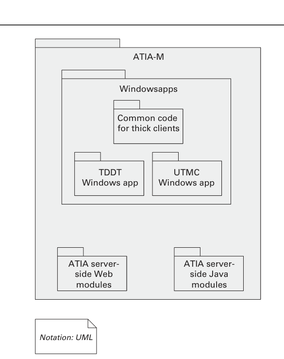
The uses style results when the depends-on relation is specialized to uses: a module uses another if its correctness depends on the correctness of the other. Whereas decomposition shows only how implementation units are organized into modules and submodules, the uses style goes a step further to reveal which modules use which others. It tells developers what other modules must exist for their portion to work correctly, and it enables incremental development and the deployment of useful subsets of full systems.
사용 스타일은 depends-on 관계를 uses로 특수화할 때 나타난다. 한 모듈은 자신의 정확성이 다른 모듈의 정확성에 의존할 때 그 모듈을 사용한다. 분해는 구현 단위를 모듈과 하위 모듈로 어떻게 구성했는지만 보여주는 반면, 사용 스타일은 한 단계 더 나아가 어떤 모듈이 어떤 모듈을 사용하는지를 드러낸다. 이는 개발자에게 자기 부분이 올바르게 동작하려면 어떤 다른 모듈이 존재해야 하는지를 알려주며, 점진적 개발과 전체 시스템의 유용한 부분집합 배포를 가능하게 한다.
The elements of the uses style are modules. The relation is the uses relation, a specialization of depends-on, whereby one module requires the correct implementation of another for its own correct functioning. The view makes explicit which modules use which others to fulfill their responsibilities. The style has no topological constraints, but loops, broad fan-out, or long dependency chains impair the architecture's ability to be delivered in incremental subsets.
사용 스타일의 요소는 모듈이다. 관계는 depends-on을 특수화한 사용 관계로, 한 모듈이 올바르게 기능하려면 다른 모듈의 올바른 구현을 필요로 한다. 이 뷰는 어떤 모듈이 책임을 완수하기 위해 어떤 모듈을 사용하는지 명시한다. 이 스타일에는 위상적 제약이 없지만, 순환·넓은 팬아웃·긴 의존성 사슬이 있으면 점진적 부분집합으로 전달하는 능력이 저해된다.
This style is useful for planning incremental development, system extensions and subsets, debugging and testing, and gauging the effects of specific changes. To define incremental subsets, modules must be defined at the right level of granularity. The uses view also helps manage a system's dependencies during construction and maintenance, keeping complexity under control and avoiding modifiability degradation caused by adding undesirable dependencies.
이 스타일은 점진적 개발, 시스템 확장과 부분집합, 디버깅과 테스트 계획, 특정 변경의 영향 측정에 유용하다. 점진적 부분집합을 정의하려면 모듈을 적절한 단위 수준으로 정의해야 한다. 또한 사용 뷰는 구축·유지보수 중 시스템 의존성을 관리하여 복잡도를 통제하고, 바람직하지 않은 의존성 추가로 인한 변경 용이성 저하를 방지하는 데 도움을 준다.
The first example is Adventure Builder, whose companion online document contains a uses view. The second is the ATIA-M system, shown with a top-level uses view (which also shows decomposition) that could have superseded the earlier decomposition view for the same system. A further example is ECS (EOSDIS Core System), a NASA system whose uses view excerpt is presented in a textual, tabular format that names only the elements, with definitions left to the supporting documentation.
첫 번째 예시는 어드벤처 빌더로, 온라인 부속 문서에 사용 뷰가 들어 있다. 두 번째는 ATIA-M 시스템으로, 최상위 사용 뷰(분해도 함께 표시)로 제시되며 동일 시스템의 앞선 분해 뷰를 대체할 수도 있었다. 추가 예시는 NASA 시스템인 ECS(EOSDIS Core System)로, 사용 뷰 발췌가 텍스트 표 형식으로 제시되어 요소 이름만 나열하고 정의는 보조 문서에 맡긴다.
The layered style divides software into units called layers, each a grouping of modules offering a cohesive set of services through a public interface. Its defining property is a strict ordering relation called allowed-to-use: if (A, B) is in the relation, layer A's implementation may use any public facility of layer B. The relation must be unidirectional—usage generally flows downward, and no validly layered architecture permits unrestricted upward usage, which would destroy the properties layering brings. Higher-to-lower exceptions that skip layers are called layer bridging. Importantly, layers cannot be derived from source code; they are logical groupings expressing allowed-to-use, not the actual uses relation that source reveals.
계층 스타일은 소프트웨어를 계층이라는 단위로 나누며, 각 계층은 공개 인터페이스를 통해 응집된 서비스 집합을 제공하는 모듈들의 묶음이다. 핵심 속성은 allowed-to-use라는 엄격한 순서 관계로, (A, B)가 이 관계에 있으면 계층 A의 구현은 계층 B의 어떤 공개 기능이든 사용할 수 있다. 이 관계는 단방향이어야 하며, 사용은 일반적으로 아래로 흐른다. 정당하게 계층화된 아키텍처는 무제한적인 상향 사용을 허용하지 않는데, 이는 계층화가 주는 이점을 파괴하기 때문이다. 계층을 건너뛰는 상향-하향 예외는 layer bridging이라 한다. 중요한 점은, 계층은 소스 코드에서 도출할 수 없으며 소스가 드러내는 실제 uses 관계가 아니라 allowed-to-use를 표현하는 논리적 묶음이라는 것이다.
Layers are almost always drawn informally as a stack of boxes, where the allowed-to-use relation is shown by geometric adjacency read top-down (arrows may also be used). Layering is one of the few styles where connection is shown by adjacency rather than explicit symbols. Variations include segmented layers (a layer divided into segments, requiring explicit usage rules among segments), rings (concentric circles with the innermost as the lowest layer), layers with a sidecar (an off-stack box whose usage direction must be specified), and the use of size and color (which must be explained in the key). In UML, which has no built-in layer primitive, layers can be shown as stereotyped packages with a stereotyped allowed-to-use dependency; note that access dependencies are not transitive.
계층은 거의 항상 박스 스택으로 비공식적으로 그려지며, allowed-to-use 관계는 위에서 아래로 읽는 기하학적 인접성으로 표현된다(화살표도 사용 가능). 계층화는 연결을 명시적 기호가 아닌 인접성으로 표현하는 몇 안 되는 스타일 중 하나다. 변형으로는 분할 계층(계층을 세그먼트로 나누며 세그먼트 간 사용 규칙을 명시해야 함), 링(가장 안쪽이 최하위 계층인 동심원), 사이드카가 있는 계층(스택 밖의 박스로 사용 방향을 명시해야 함), 크기·색상 사용(키에 설명 필요) 등이 있다. 계층 기본 요소가 없는 UML에서는 계층을 스테레오타입 패키지로, allowed-to-use를 스테레오타입 의존성으로 표현할 수 있으며, 접근 의존성은 이행적이지 않음에 유의해야 한다.
A classic example is the UNIX System V operating system. Its lower layers form the system kernel, while the top layers are user programs or libraries that access the kernel through system calls. The system call interface layer isolates the kernel's implementation details and provides a virtual machine to the layers above it.
대표적 예시는 UNIX System V 운영체제다. 하위 계층은 시스템 커널을 형성하고, 상위 계층은 시스템 콜을 통해 커널에 접근하는 사용자 프로그램이나 라이브러리다. 시스템 콜 인터페이스 계층은 커널 구현 세부사항을 격리하고 상위 계층에 가상 머신을 제공한다.
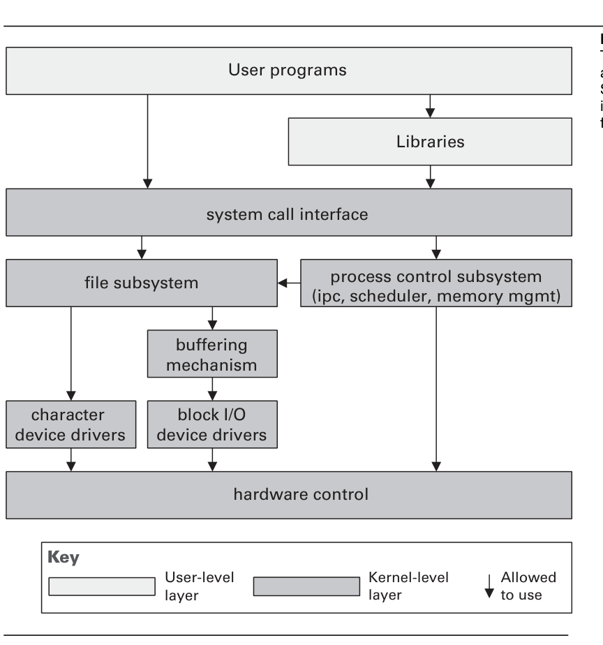
Data modeling is a common activity in developing information systems; its output, the data model, describes the static information structure in terms of data entities and their relationships. For example, a banking system has entities such as Account, Customer, and Loan, with attributes and relationships (one customer may have many accounts). The data model is often drawn as entity-relationship diagrams (ERDs) or UML class diagrams. Like any architecture view, it starts with little detail and is elaborated over time, evolving from a high-level model of business-domain entities toward one showing how data is stored (e.g., in a relational database), so different organizations focus their effort on different stages of this evolution.
데이터 모델링은 정보 시스템 개발에서 흔한 활동으로, 그 산출물인 데이터 모델은 정적 정보 구조를 데이터 엔터티와 그 관계의 관점에서 기술한다. 예를 들어 뱅킹 시스템에는 Account, Customer, Loan 같은 엔터티가 있고 속성과 관계를 가진다(한 고객이 여러 계좌를 가질 수 있음). 데이터 모델은 흔히 개체-관계 다이어그램(ERD)이나 UML 클래스 다이어그램으로 그려진다. 다른 아키텍처 뷰와 마찬가지로 처음에는 세부사항이 거의 없다가 시간이 지나며 정교해지며, 업무 도메인 엔터티의 고수준 모델에서 데이터가 (예: 관계형 데이터베이스에) 저장되는 방식을 보여주는 모델로 진화한다. 그래서 조직마다 이 진화의 서로 다른 단계에 노력을 집중한다.
The elements are data entities—any distinguishable object holding information to be stored or represented. Entity properties include name, description, data attributes (each with type, size, and whether required), the primary key, whether the entity is weak (dependent on another entity's existence), constraints and invariants, access-permission rules, and expected instance counts; physical-model properties add indexing, encryption, views, materialized views, and triggers. There are three relation types: relationships (logical associations qualified by cardinality—one-to-one, one-to-many, many-to-many—and identifying or nonidentifying), generalization/specialization (an is-a relation), and aggregation (turning a relationship into an aggregate entity, rarely used in practice). There are no inherent topological constraints, but normalization imposes restrictions to avoid duplication and safeguard data consistency.
요소는 데이터 엔터티로, 저장하거나 표현할 정보를 담는 식별 가능한 객체다. 엔터티 속성에는 이름, 설명, 데이터 속성(각각 타입·크기·필수 여부 포함), 기본 키, 약한 엔터티 여부(다른 엔터티의 존재에 의존), 제약과 불변식, 접근 권한 규칙, 예상 인스턴스 수가 있고, 물리 모델 속성으로 인덱싱·암호화·뷰·구체화 뷰·트리거가 추가된다. 관계 유형은 세 가지다: 관계(카디널리티—일대일, 일대다, 다대다—로 한정되며 식별 또는 비식별인 논리적 연관), 일반화/특수화(is-a 관계), 집계(관계를 집계 엔터티로 전환하며 실무에서는 드물게 사용). 위상적 제약은 본질적으로 없으나, 정규화는 중복을 피하고 데이터 일관성을 지키기 위한 제약을 부과한다.
The data model facilitates stakeholder communication during domain analysis and requirements elicitation, but foremost it is the blueprint for implementing data entities, for example in a relational database. A careful model also helps achieve performance requirements: in data-centric applications, performance-driven design decisions (merging entities, adding derived attributes, creating indexes, tuning locks) are applied to the model, and it later aids query optimization of bottlenecks. It is essential input to modifiability analysis, since many changes require altering the data model and its physical implementation, which can be costly across applications sharing the data. Ideally created with awareness of incremental plans and cross-system integration, it (together with an enterprise data model and data administration) helps enforce data integrity, lets tools generate database scripts and application code, and helps developers write data-access code by reading an ERD rather than browsing table-creation commands.
데이터 모델은 도메인 분석과 요구사항 도출 과정에서 이해관계자 의사소통을 돕지만, 무엇보다 데이터 엔터티 구현(예: 관계형 데이터베이스)의 청사진이다. 잘 만든 모델은 성능 요구사항 달성에도 도움이 된다. 데이터 중심 애플리케이션에서는 성능 주도 설계 결정(엔터티 병합, 파생 속성 추가, 인덱스 생성, 락 조정)이 모델에 적용되며, 이후 병목의 쿼리 최적화에도 도움을 준다. 또한 변경 용이성 분석의 핵심 입력으로, 많은 변경이 데이터 모델과 그 물리적 구현 변경을 요구하며 데이터를 공유하는 여러 애플리케이션에 걸쳐 비용이 클 수 있다. 점진적 계획과 시스템 간 통합을 충분히 이해하고 만드는 것이 이상적이며, (전사 데이터 모델 및 데이터 관리와 함께) 데이터 무결성 강화에 기여하고, 도구가 데이터베이스 스크립트와 애플리케이션 코드를 생성하게 하며, 개발자가 테이블 생성 명령을 살펴보는 대신 ERD를 읽어 데이터 접근 코드를 작성하도록 돕는다.
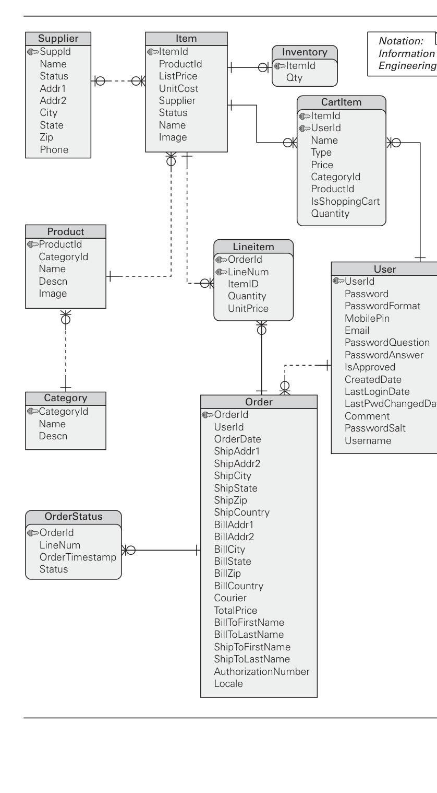
[Clements10] Chapter 2 — A Tour of Some Module Styles
These chapters cover component-and-connector (C&C) views, which depict a system's runtime structure as components (units of execution) joined by connectors (pathways and protocols of interaction). Chapter 3 defines the general elements, relations, and properties of C&C views; Chapter 4 tours four broad C&C style categories — data flow, call-return, event-based, and repository — each grounded in a distinct computational model. Chapter 8 contributes guidance on documenting the behavior that flows across those connectors, including the types of communication between elements.
이 장들은 시스템의 런타임 구조를 실행 단위인 컴포넌트(component)와 상호작용 경로 및 프로토콜인 커넥터(connector)로 표현하는 컴포넌트-커넥터(C&C) 뷰를 다룹니다. 3장은 C&C 뷰의 일반적인 요소, 관계, 속성을 정의하고, 4장은 각기 다른 계산 모델에 기반한 네 가지 큰 C&C 스타일 범주 — 데이터 흐름, 호출-반환, 이벤트 기반, 저장소 — 를 둘러봅니다. 8장은 커넥터를 통해 흐르는 행위를 문서화하는 지침과 요소 간 통신 유형에 대한 내용을 제공합니다.
A C&C view shows elements that have some runtime presence — such as processes, objects, clients, servers, and data stores — which are called components. It also includes the pathways of interaction, such as communication links, protocols, information flows, and access to shared storage; these interactions are represented as connectors.
C&C 뷰는 프로세스, 객체, 클라이언트, 서버, 데이터 저장소처럼 런타임에 존재하는 요소들을 보여주며, 이들을 컴포넌트라고 부릅니다. 또한 통신 링크, 프로토콜, 정보 흐름, 공유 저장소 접근과 같은 상호작용 경로도 포함하는데, 이러한 상호작용은 커넥터로 표현됩니다.
C&C views are ubiquitous in practice; informal box-and-line diagrams are often the first-look medium for explaining a system's architecture. But such informal views can be misleading, ambiguous, and inconsistent — partly from the usual pitfalls of visual documentation, and partly from using components and connectors to portray a system's execution structure. The chapter therefore provides guidelines and highlights common pitfalls.
C&C 뷰는 실무에서 매우 흔하며, 비공식적인 박스-라인 다이어그램은 시스템 아키텍처를 처음 설명하는 수단으로 자주 쓰입니다. 그러나 이러한 비공식 뷰는 오해를 부르고 모호하며 일관성이 없을 수 있는데, 이는 시각적 문서화의 일반적 함정과 컴포넌트·커넥터로 시스템의 실행 구조를 표현하는 데서 비롯됩니다. 따라서 이 장은 지침을 제시하고 흔한 함정을 강조합니다.
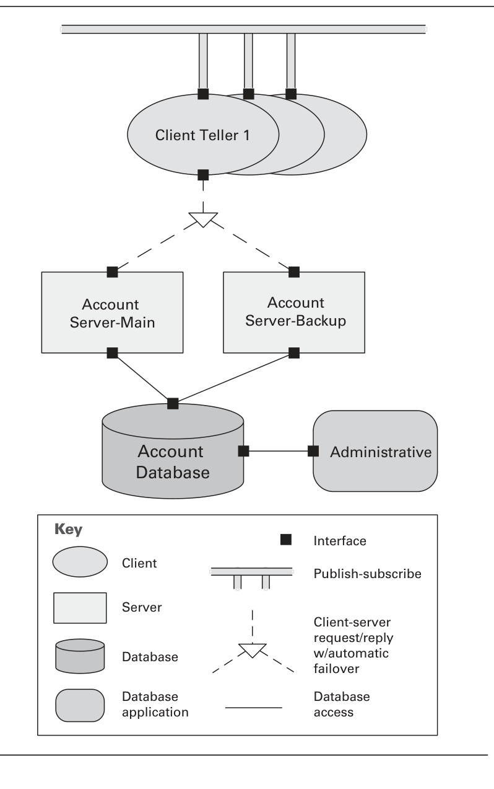
The elements of a C&C view are components and connectors. Each element has a runtime manifestation, consuming execution resources and contributing to the execution behavior of the system. Attachment relations associate components with connectors (via their respective ports and roles) to form a graph that represents a runtime system configuration.
C&C 뷰의 요소는 컴포넌트와 커넥터입니다. 각 요소는 런타임에 나타나 실행 자원을 소비하며 시스템의 실행 행위에 기여합니다. 부착 관계(attachment relation)는 각각의 포트(port)와 역할(role)을 통해 컴포넌트와 커넥터를 연결하여, 런타임 시스템 구성을 나타내는 그래프를 형성합니다.
Components represent the principal computational elements and data stores present at runtime. Each component in a C&C view has a name that should indicate its intended function and lets you relate the graphical element to its supporting documentation.
컴포넌트는 런타임에 존재하는 주요 계산 요소와 데이터 저장소를 나타냅니다. C&C 뷰의 각 컴포넌트는 이름을 가지며, 이 이름은 의도한 기능을 나타내고 그래픽 요소를 보조 문서와 연결할 수 있게 해줍니다.
Components have interfaces called ports. A port defines a specific point of potential interaction of a component with its environment and usually has an explicit type defining the kind of behavior at that point. Unlike module interfaces, a component may have many ports of the same type — for example, a filter with several input ports of the same type to handle multiple input streams.
컴포넌트는 포트라는 인터페이스를 가집니다. 포트는 컴포넌트가 환경과 상호작용할 수 있는 특정 지점을 정의하며, 보통 그 지점에서 일어날 수 있는 행위의 종류를 정의하는 명시적 타입을 가집니다. 모듈 인터페이스와 달리 컴포넌트는 같은 타입의 포트를 여러 개 가질 수 있는데, 예를 들어 필터는 여러 입력 스트림을 처리하기 위해 같은 타입의 입력 포트를 여러 개 가질 수 있습니다.
A second characteristic of communication is whether elements communicate via synchronous or asynchronous means. Remote procedure call (RPC) is synchronous: the sender calls the receiver and is blocked until the receiver responds. Messaging is asynchronous: the sender does not concern itself with the receiver's state, continues execution right after sending, and is not blocked waiting for a response; sender and receiver may not even be aware of each other's identity.
통신의 두 번째 특성은 요소들이 동기(synchronous) 방식으로 통신하는지 비동기(asynchronous) 방식으로 통신하는지입니다. 원격 프로시저 호출(RPC)은 동기적입니다. 송신자가 수신자를 호출하고 수신자가 응답할 때까지 차단(blocked)됩니다. 메시징은 비동기적입니다. 송신자는 수신자의 상태에 신경 쓰지 않고 메시지를 보낸 직후 실행을 계속하며 응답을 기다리며 차단되지 않습니다. 송신자와 수신자는 서로의 정체를 알지 못할 수도 있습니다.
Consider the telephone and e-mail: a phone call requires the other person to be present, which is synchronous; sending an e-mail and moving on, perhaps without concern for a response, is asynchronous. The distinction has implications for behavior — an asynchronous call introduces concurrency and suits loosely coupled elements — and for modifiability, since asynchronous interactions are usually more complicated, especially when a callback is needed.
전화와 이메일을 생각해 봅시다. 전화 통화는 상대방이 그 자리에 있어야 하므로 동기적이고, 이메일을 보내고 응답에 신경 쓰지 않은 채 다른 일을 하는 것은 비동기적입니다. 이 구분은 행위에 영향을 미칩니다. 비동기 호출은 동시성(concurrency)을 도입하고 느슨하게 결합된(loosely coupled) 요소에 적합합니다. 또한 수정 용이성에도 영향을 미치는데, 비동기 상호작용은 특히 콜백(callback)이 필요할 때 보통 더 복잡하기 때문입니다.
A third characteristic is whether the call is local (within the same container or machine) or remote. If remote, performance is worse because of network overhead — even a remote call reaching a component on the same machine incurs the cost of traversing the network layer stack. Remote calls are also less reliable: a call or its response may not be delivered, may get corrupted, or may arrive in the wrong order.
세 번째 특성은 호출이 로컬(local)(같은 컨테이너나 머신 내)인지 원격(remote)인지입니다. 원격일 경우 네트워크 오버헤드 때문에 성능이 더 나쁩니다. 원격 호출이 같은 머신 내 컴포넌트에 도달하더라도 네트워크 계층 스택을 거치는 비용이 발생합니다. 원격 호출은 또한 신뢰성이 떨어집니다. 호출이나 응답이 전달되지 않거나, 손상되거나, 잘못된 순서로 도착할 수 있습니다.
A C&C style introduces a specific set of component-and-connector types and specifies rules about how elements of those types can be combined. Because C&C views capture runtime aspects, a C&C style is typically associated with a computational model that prescribes how data and control flow through systems designed in that style. The choice of style depends on the nature of the runtime structures and on the intended use of the documentation.
C&C 스타일은 특정한 컴포넌트-커넥터 타입 집합을 도입하고 그 타입의 요소들을 어떻게 결합할 수 있는지에 대한 규칙을 정합니다. C&C 뷰가 런타임 측면을 담기 때문에, C&C 스타일은 보통 해당 스타일로 설계된 시스템에서 데이터와 제어가 어떻게 흐르는지를 규정하는 계산 모델(computational model)과 연관됩니다. 스타일 선택은 런타임 구조의 성격과 문서의 의도된 용도에 달려 있습니다.
To impose order on the large space of styles, the chapter considers four categories differentiated by their underlying computational model: call-return styles (components interact through synchronous invocation of others' capabilities), data flow styles (computation driven by the flow of data), event-based styles (components interact through asynchronous events or messages), and repository styles (components interact through large collections of persistent, shared data). In real systems, several styles are often used together.
방대한 스타일 공간에 질서를 부여하기 위해, 이 장은 기반 계산 모델에 따라 구분되는 네 범주를 다룹니다. 호출-반환 스타일(컴포넌트가 다른 컴포넌트의 기능을 동기적으로 호출하여 상호작용), 데이터 흐름 스타일(데이터의 흐름이 계산을 주도), 이벤트 기반 스타일(컴포넌트가 비동기 이벤트나 메시지로 상호작용), 저장소 스타일(컴포넌트가 지속적이고 공유된 대규모 데이터 집합을 통해 상호작용)입니다. 실제 시스템에서는 여러 스타일이 함께 쓰이는 경우가 많습니다.
The pipe-and-filter style belongs to the data flow category, in which components act as data transformers and connectors transmit data from one component's outputs to another's inputs. Each component consumes data on its input ports and writes transformed data to its output ports.
파이프-필터 스타일은 데이터 흐름 범주에 속하며, 이 범주에서 컴포넌트는 데이터 변환기 역할을 하고 커넥터는 한 컴포넌트의 출력에서 다른 컴포넌트의 입력으로 데이터를 전달합니다. 각 컴포넌트는 입력 포트에서 데이터를 소비하고 변환된 데이터를 출력 포트에 씁니다.
The pattern of interaction is characterized by successive transformations of streams of data. Data arrives at a filter's input ports, is transformed, and is passed via its output ports through a pipe to the next filter; a single filter can consume from or produce to multiple ports. Filters typically execute concurrently and incrementally. Modern examples include signal-processing systems, UNIX pipes, the Apache Web server's request-processing architecture, the map-reduce paradigm, and Yahoo! Pipes.
상호작용 패턴은 데이터 스트림의 연속적인 변환으로 특징지어집니다. 데이터는 필터(filter)의 입력 포트에 도착하여 변환된 뒤, 출력 포트를 통해 파이프(pipe)를 거쳐 다음 필터로 전달됩니다. 하나의 필터는 여러 포트에서 소비하거나 여러 포트로 생성할 수 있습니다. 필터는 보통 동시에 그리고 점진적으로 실행됩니다. 현대적 예로는 신호 처리 시스템, UNIX 파이프, Apache 웹 서버의 요청 처리 아키텍처, 맵-리듀스 패러다임, Yahoo! Pipes 등이 있습니다.
In the peer-to-peer style, components directly interact as peers by exchanging services. It is a kind of request/reply interaction without the asymmetry of the client-server style: any component can, in principle, interact with any other by requesting its services, and each peer both provides and consumes similar services. Connectors may involve complex bidirectional protocols reflecting the two-way communication between peers. Examples include file-sharing networks (BitTorrent, eDonkey), instant messaging and VoIP (Skype), and desktop grid computing.
피어-투-피어 스타일에서는 컴포넌트가 서비스를 교환하며 피어(peer)로서 직접 상호작용합니다. 이는 클라이언트-서버 스타일의 비대칭성이 없는 요청/응답 상호작용의 일종으로, 원칙적으로 어떤 컴포넌트든 다른 컴포넌트의 서비스를 요청하여 상호작용할 수 있으며 각 피어는 유사한 서비스를 제공하면서 동시에 소비합니다. 커넥터는 피어 간 양방향 통신을 반영하는 복잡한 양방향 프로토콜을 포함할 수 있습니다. 예로는 파일 공유 네트워크(BitTorrent, eDonkey), 인스턴트 메시징과 VoIP(Skype), 데스크톱 그리드 컴퓨팅이 있습니다.
The principal connector is the call-return connector, but unlike client-server, interaction may be initiated by either party — each peer acts as both client and server. Peers first connect to the network and then cooperate by requesting services from one another; a search may be propagated across connected peers for a limited number of hops, and special peers (ultrapeers/supernodes) may provide indexing or routing. The style provides enhanced availability and scalability, since peers can be added or removed with no significant impact.
주된 커넥터는 호출-반환 커넥터이지만, 클라이언트-서버와 달리 상호작용은 어느 쪽이든 시작할 수 있어 각 피어가 클라이언트이자 서버 역할을 합니다. 피어는 먼저 네트워크에 연결한 뒤 서로 서비스를 요청하며 협력합니다. 검색은 제한된 수의 홉(hop) 만큼 연결된 피어들로 전파될 수 있고, 특수 피어(울트라피어/슈퍼노드)가 색인이나 라우팅을 제공할 수 있습니다. 이 스타일은 피어를 큰 영향 없이 추가·제거할 수 있어 향상된 가용성과 확장성을 제공합니다.
In the publish-subscribe style, components interact via announced events. Components may subscribe to a set of events, and it is the job of the publish-subscribe runtime infrastructure to ensure each published event is delivered to all subscribers. The main connector is thus a kind of event bus: components place events on the bus by announcing them, and the connector delivers them to components that registered interest.
발행-구독 스타일에서는 컴포넌트가 공지된 이벤트를 통해 상호작용합니다. 컴포넌트는 일련의 이벤트를 구독할 수 있으며, 발행된 각 이벤트가 모든 구독자에게 전달되도록 보장하는 것은 발행-구독 런타임 인프라의 역할입니다. 따라서 주된 커넥터는 일종의 이벤트 버스(event bus)입니다. 컴포넌트는 이벤트를 공지하여 버스에 올리고, 커넥터는 관심을 등록한 컴포넌트들에게 이를 전달합니다.
The computational model is a system of independent processes or objects that react to events from their environment and, in turn, cause reactions in others as a side effect of their announcements. One common form is implicit invocation, where a component registers a procedure against each subscribed event type. The style sends events to an unknown set of recipients, isolating event producers from consumers — so new recipients can be added without modifying producers. Examples include GUIs, the model-view-controller (MVC) pattern, mailing lists, and social networks.
계산 모델은 환경에서 발생한 이벤트에 반응하고, 자신의 공지의 부수 효과로 다른 컴포넌트의 반응을 유발하는 독립적인 프로세스 또는 객체들의 시스템입니다. 흔한 한 형태는 암시적 호출(implicit invocation)로, 컴포넌트가 구독한 각 이벤트 타입에 프로시저를 등록합니다. 이 스타일은 알려지지 않은 수신자 집합에 이벤트를 보내 이벤트 생산자를 소비자로부터 분리하므로, 생산자를 수정하지 않고도 새로운 수신자를 추가할 수 있습니다. 예로는 GUI, 모델-뷰-컨트롤러(MVC) 패턴, 메일링 리스트, 소셜 네트워크가 있습니다.
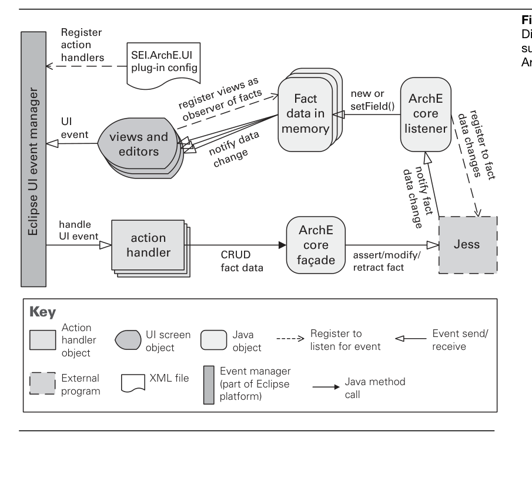
[Clements10] Chapters 3, 4, 8
Section 4.1.2 sits within §4.1 (SOA Communication Approaches), which surveys how each interaction between a service user and provider can be implemented — via SOAP, REST, or messaging systems. This subsection presents REST (Representational State Transfer), proposed by Roy Fielding, as a simpler alternative to SOAP-based Web services that avoids their complexity and processing overhead by using bare http. It explains REST's core concepts, its claimed benefits, and how an evaluator should weigh REST against SOAP for each service.
4.1.2절은 §4.1(SOA 통신 방식) 안에 위치하며, 이 장은 서비스 사용자와 제공자 간의 각 상호작용이 SOAP, REST, 메시징 시스템 등으로 구현될 수 있음을 다룹니다. 이 소절은 Roy Fielding이 제안한 REST(Representational State Transfer)를 소개하는데, REST는 순수 http를 사용하여 SOAP 기반 웹 서비스의 복잡성과 처리 오버헤드를 피하는 더 단순한 대안입니다. REST의 핵심 개념, 주장되는 이점, 그리고 평가자가 각 서비스에 대해 REST와 SOAP을 어떻게 비교해야 하는지를 설명합니다.
A key REST concept is a resource — a piece of information with a unique identifier, typically a URI (uniform resource identifier). Using a weather service example, resource types such as current weather, weather forecast, and temperature averages are each given structured URIs (e.g., http://www.weather.com/current/zip/15213). Parameters may be expressed as path elements or as [key]=[value] pairs.
REST의 핵심 개념은 리소스로, 이는 고유 식별자(일반적으로 URI, 통합 자원 식별자)를 가진 정보 조각입니다. 날씨 서비스 예시에서 현재 날씨, 일기 예보, 평균 기온과 같은 리소스 유형 각각에 구조화된 URI(예: http://www.weather.com/current/zip/15213)가 부여됩니다. 매개변수는 경로 요소 또는 [키]=[값] 쌍으로 표현될 수 있습니다.
REST relies on the http protocol's four basic operations — POST, GET, PUT, and DELETE — which map to the create, retrieve, update, and delete (CRUD) operations common in information systems. It defines status codes such as 200 (OK), 201 (created), and 401 (unauthorized). REST prescribes a uniform interface: services are exposed as information resources upon which a fixed set of operations can be applied, rather than as a set of methods with different parameters. Each resource needs a representation (most often basic XML), and REST services are necessarily stateless — they do not store conversational state across requests.
REST는 http 프로토콜의 네 가지 기본 연산 — POST, GET, PUT, DELETE —에 의존하며, 이들은 정보 시스템에서 흔한 생성, 조회, 갱신, 삭제(CRUD) 연산에 대응됩니다. 200(OK), 201(생성됨), 401(권한 없음)과 같은 상태 코드를 정의합니다. REST는 통일된 인터페이스를 규정합니다. 즉, 서비스는 서로 다른 매개변수를 가진 메서드 집합이 아니라, 고정된 연산 집합을 적용할 수 있는 정보 리소스로 노출됩니다. 각 리소스에는 표현(representation)(대개 기본 XML)이 필요하며, REST 서비스는 필연적으로 무상태(stateless)입니다 — 즉 요청 간에 대화 상태를 저장하지 않습니다.
REST advocates claim three main benefits: improved modifiability (because of the uniform interface, a service user only needs to understand the data contract, not the interface contract, since the latter is uniform across all services); ease of implementation and high interoperability (it only requires standard http support, with no SOAP toolkits or Web-services-capable application server); and better performance (due to its ability to cache responses and the absence of intermediaries, message wrapping, and serialization required by Web services).
REST 지지자들은 세 가지 주요 이점을 주장합니다. 향상된 변경 용이성(modifiability)(통일된 인터페이스 덕분에 인터페이스 계약이 모든 서비스에 걸쳐 동일하므로 서비스 사용자는 인터페이스 계약이 아니라 데이터 계약만 이해하면 됨), 구현의 용이성과 높은 상호운용성(interoperability)(SOAP 툴킷이나 웹 서비스를 지원하는 애플리케이션 서버 없이 표준 http 지원만 필요함), 그리고 더 나은 성능(performance)(응답을 캐싱할 수 있는 능력과 웹 서비스가 요구하는 중개자, 메시지 래핑, 직렬화의 부재 덕분).
Web services and REST represent two different paradigms for implementing SOA: one centered on the operations executed by the provider, the other focused on access to resources. During an architecture evaluation, the team can question which is more appropriate for each service. REST is a good option for accessing static or nearly static resources, and for portable devices with limited bandwidth since REST messages are less verbose than SOAP. Web services offer better support for security, reliable messaging, and transaction management, plus wider community knowledge and tooling. An application serving many users and partners can build both SOAP and REST interfaces for the same services, as Amazon.com and eBay do.
웹 서비스와 REST는 SOA를 구현하는 두 가지 서로 다른 패러다임을 나타냅니다. 하나는 제공자가 실행하는 연산에 중심을 두고, 다른 하나는 리소스에 대한 접근에 초점을 둡니다. 아키텍처 평가 과정에서 평가 팀은 각 서비스에 어느 쪽이 더 적합한지 질문할 수 있습니다. REST는 정적이거나 거의 정적인 리소스에 접근할 때, 그리고 REST 메시지가 SOAP보다 덜 장황하므로 대역폭이 제한된 휴대 기기에 좋은 선택지입니다. 웹 서비스는 보안, 신뢰성 있는 메시징, 트랜잭션 관리에 대한 더 나은 지원과 더 넓은 커뮤니티 지식 및 도구 지원을 제공합니다. 많은 사용자와 파트너에게 서비스를 제공하는 애플리케이션은 Amazon.com과 eBay처럼 동일한 서비스에 대해 SOAP과 REST 인터페이스를 모두 구축할 수 있습니다.
[Bianco07] §4.1.2
Ports and Adapters, also known as Hexagonal, is a versatile architecture style that inherits concepts from the traditional Layers architecture but emphasizes different strengths—such as testability and loose coupling—with much less overhead. Its goal is to let an application be driven equally by users, programs, automated tests, or batch scripts, and to be developed and tested in isolation from its eventual runtime devices and databases.
육각형(Hexagonal)이라고도 불리는 포트와 어댑터(Ports and Adapters)는 전통적인 계층형(Layers) 아키텍처의 개념을 물려받았지만, 테스트 용이성과 느슨한 결합 같은 다른 강점을 강조하면서도 부담은 훨씬 적은 다재다능한 아키텍처 스타일이다. 그 목표는 애플리케이션이 사용자, 프로그램, 자동화 테스트, 배치 스크립트 등에 의해 동등하게 구동될 수 있고, 최종 런타임 장치 및 데이터베이스와 분리되어 개발 및 테스트될 수 있도록 하는 것이다.
External devices and mechanisms (a browser, mobile phone, another service, streaming/messaging, batch processing, tests) differ fundamentally from one another. The service or application should not be exposed directly to these outside interactions, because doing so would interfere with the technology-independent business logic and processing. The solution is to create a layer of adapters between the two sets of concerns.
외부 장치 및 메커니즘(브라우저, 휴대폰, 다른 서비스, 스트리밍/메시징, 배치 처리, 테스트)은 서로 근본적으로 다르다. 서비스나 애플리케이션은 이러한 외부 상호작용에 직접 노출되어서는 안 되는데, 그렇게 하면 기술에 독립적인 비즈니스 로직과 처리를 방해하기 때문이다. 해결책은 이 두 관심사 사이에 어댑터(adapter) 계층을 두는 것이다.
The style separates the architecture into the outside and the inside. The inside is the circular Application area, whose ports are shown as the bold border around it. Adapters sit on the outside and convert between the external world and the data types the Application can consume. Multiple outside-left adapter types can reuse the same Application ports rather than requiring a separate port for every adapter.
이 스타일은 아키텍처를 외부(outside)와 내부(inside)로 분리한다. 내부는 원형의 애플리케이션 영역이며, 그 포트(port)는 영역을 둘러싼 굵은 경계선으로 표현된다. 어댑터(adapter)는 외부에 위치하여 외부 세계와 애플리케이션이 소비할 수 있는 데이터 타입 사이를 변환한다. 여러 개의 외부-왼쪽 어댑터 타입이 어댑터마다 별도의 포트를 요구하는 대신 동일한 애플리케이션 포트를 재사용할 수 있다.
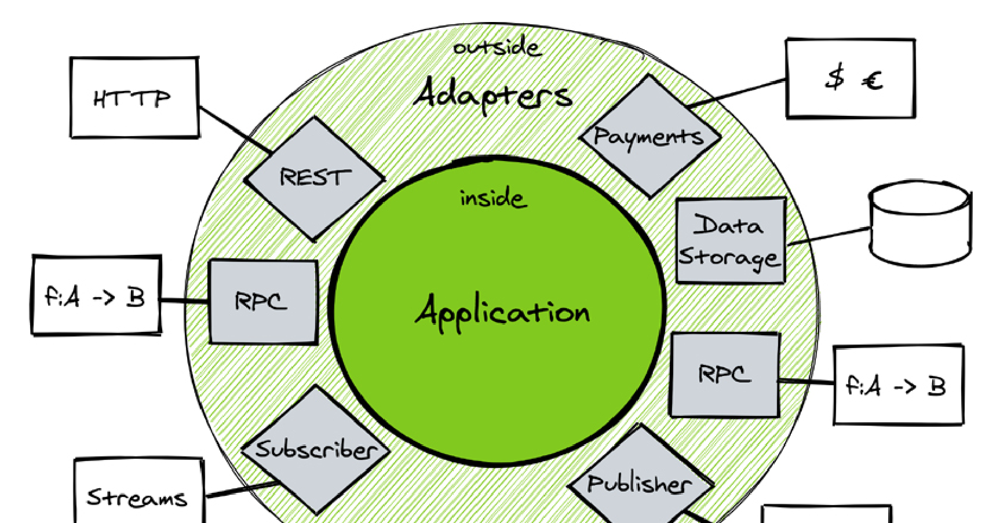
On the outside left are driver types, also called primary actors (HTTP, externally called procedures/functions, flowing streams or messages); they send input requests or notifications. On the outside right are driven types, also called secondary actors (payment gateways, databases, outward procedure/function calls, outgoing streams/messages); the Application drives them to persist, query, and deliver notifications. Crucially, only the outside left is aware of the use cases on the inside—the outside-right driven actors are oblivious to use cases.
외부 왼쪽에는 주 액터(primary actor)라고도 불리는 구동 타입(driver type)이 있으며(HTTP, 외부에서 호출되는 프로시저/함수, 흐르는 스트림이나 메시지), 이들은 입력 요청이나 알림을 보낸다. 외부 오른쪽에는 보조 액터(secondary actor)라고도 불리는 피구동 타입(driven type)이 있으며(결제 게이트웨이, 데이터베이스, 외부로의 프로시저/함수 호출, 나가는 스트림/메시지), 애플리케이션이 이들을 구동하여 영속화, 조회, 알림 전달을 수행한다. 중요한 점은 오직 외부 왼쪽만이 내부의 유스 케이스(use case)를 인식하며, 외부 오른쪽의 피구동 액터는 유스 케이스를 전혀 알지 못한다는 것이다.
The Application is focused solely on business-driven use cases. The outside-left adapters adapt incoming requests or notifications into the data types needed to carry out those use cases, while the Application uses outside-right adapters to persist, query, and deliver notifications. Some driven actors are bidirectional (request and response); others receive one-way notifications.
애플리케이션은 오직 비즈니스 중심의 유스 케이스에만 집중한다. 외부-왼쪽 어댑터는 들어오는 요청이나 알림을 해당 유스 케이스를 수행하는 데 필요한 데이터 타입으로 변환하고, 애플리케이션은 외부-오른쪽 어댑터를 사용하여 영속화, 조회, 알림 전달을 수행한다. 일부 피구동 액터는 양방향(요청과 응답)이고, 다른 일부는 단방향 알림만 받는다.
The two main layers can be tested in isolation: any adapter can be tested without a specific application implementation, and the application without any given adapter. Device adapters can be backed by both mocks/fakes and actual mechanisms, and each mechanism may have many concrete types (Postgres, MariaDB, DynamoDB, etc.). New adapter types can be added as needed, supporting agile, emergent design without big upfront architecture. Multiple outside adapters can reuse the same inside Application facilities, and the application stays completely isolated from device-level technology details.
두 주요 계층은 격리된 상태로 테스트할 수 있다. 즉, 어떤 어댑터든 특정 애플리케이션 구현 없이 테스트할 수 있고, 애플리케이션도 특정 어댑터 구현 없이 테스트할 수 있다. 장치 어댑터는 목/페이크(mock/fake)와 실제 메커니즘 모두로 뒷받침될 수 있으며, 각 메커니즘은 여러 구체적 타입(Postgres, MariaDB, DynamoDB 등)을 가질 수 있다. 새로운 어댑터 타입은 필요에 따라 추가할 수 있어, 큰 사전 설계 없이 애자일하고 점진적으로 발현되는 설계를 지원한다. 여러 외부 어댑터가 동일한 내부 애플리케이션 기능을 재사용할 수 있으며, 애플리케이션은 장치 수준의 기술 세부사항으로부터 완전히 격리된 상태를 유지한다.
Disadvantages depend on integration choices, not the style itself. Data mappers (e.g., ORM tools) can add complexity, but that stems from the persistence-integration choice. Integrating the domain model with remote services through an interface can leak implementation details such as network/service-failure exceptions; this can be avoided—for example with a Functional Core with Imperative Shell, where the Imperative Shell does all integration work and the Functional Core provides only pure, side-effect-free functions. The authors dismiss claims of excessive layers, cost, or lack of code-organization guidance as unsubstantiated.
단점은 스타일 자체가 아니라 통합 선택에 달려 있다. 데이터 매퍼(예: ORM 도구)는 복잡성을 더할 수 있으나, 이는 영속성 통합 선택에서 비롯된 것이다. 도메인 모델을 인터페이스를 통해 원격 서비스와 통합하면 네트워크/서비스 장애 예외 같은 구현 세부사항이 누출될 수 있는데, 이는 회피할 수 있다. 예를 들어 명령형 셸을 가진 함수형 코어(Functional Core with Imperative Shell)에서는 명령형 셸이 모든 통합 작업을 수행하고 함수형 코어는 순수하고 부수 효과 없는 함수만 제공한다. 저자들은 과도한 계층, 비용, 코드 구성 지침 부족이라는 주장들을 근거 없는 것으로 일축한다.
The design can employ the Dependency Inversion Principle, so the infrastructure depends on the Application rather than the reverse. The Application avoids concrete device dependencies because dependencies on outside-right secondary actors are managed through adapter interfaces, supplied via service constructors/initializers or container-based dependency injection. Each adapter should follow the Single Responsibility Principle—handling only the input/output it is designated to support—and no adapter should depend on another adapter. A Ports and Adapters system has exactly the adapters needed (no more, no less) and only two primary layers.
이 설계는 의존성 역전 원칙(Dependency Inversion Principle)을 적용할 수 있어, 애플리케이션이 인프라에 의존하는 대신 인프라가 애플리케이션에 의존하게 된다. 외부-오른쪽 보조 액터에 대한 의존성이 어댑터 인터페이스를 통해 관리되기 때문에 애플리케이션은 구체적인 장치 의존성을 피할 수 있으며, 이 어댑터 인터페이스는 서비스 생성자/초기화자나 컨테이너 기반 의존성 주입(dependency injection)을 통해 제공된다. 각 어댑터는 단일 책임 원칙(Single Responsibility Principle)을 따라 자신이 담당하도록 지정된 입출력만 처리해야 하며, 어떤 어댑터도 다른 어댑터에 의존해서는 안 된다. 포트와 어댑터 시스템은 필요한 만큼의 어댑터(그 이상도 이하도 아닌)와 단 두 개의 주요 계층만을 가진다.
[Vernon21] Hexagonal Architecture (excerpt from Chapter 8)
The plug-in (microkernel) pattern is a modifiability pattern with two types of elements: elements providing a core set of functionality and specialized variants called plug-ins that add functionality to the core through a fixed set of interfaces. The two types are typically bound together at build time or later.
플러그인(마이크로커널) 패턴은 변경용이성 패턴으로, 두 종류의 요소를 가진다: 핵심 기능 집합을 제공하는 요소와, 고정된 인터페이스 집합을 통해 핵심에 기능을 추가하는 플러그인이라 불리는 특화된 변형이다. 두 종류는 보통 빌드 시점 또는 그 이후에 함께 바인딩된다.
In one usage, the core is a stripped-down operating system (the microkernel) that provides mechanisms for implementing OS services such as low-level address space management, thread management, and interprocess communication (IPC); the plug-ins provide the actual OS functionality such as device drivers, task management, and I/O request management. In another usage, the core is a product providing services to users, and the plug-ins provide portability (e.g., operating system or supporting-library compatibility), add functionality not included in the core, or act as adapters to integrate with external systems.
한 가지 용례에서 핵심은 간소화된 운영체제(마이크로커널)로, 저수준 주소 공간 관리, 스레드 관리, 프로세스 간 통신(IPC) 같은 OS 서비스를 구현하는 메커니즘을 제공하며, 플러그인은 장치 드라이버, 작업 관리, I/O 요청 관리 등 실제 OS 기능을 제공한다. 또 다른 용례에서 핵심은 사용자에게 서비스를 제공하는 제품이며, 플러그인은 이식성(예: 운영체제 또는 지원 라이브러리 호환성)을 제공하거나, 핵심에 포함되지 않은 기능을 추가하거나, 외부 시스템과 통합하기 위한 어댑터 역할을 한다.
Plug-ins attach to the core via a fixed set of interfaces. Because the two element types interact only through these fixed interfaces, they remain otherwise decoupled, and the binding of plug-ins to the core occurs at build time or later.
플러그인은 고정된 인터페이스 집합을 통해 핵심에 연결된다. 두 종류의 요소가 이 고정된 인터페이스를 통해서만 상호작용하므로, 그 외에는 서로 결합되지 않으며, 플러그인과 핵심의 바인딩은 빌드 시점 또는 그 이후에 일어난다.
Plug-ins provide a controlled mechanism to extend a core product and make it useful in a variety of contexts. They can be developed by teams or organizations different from the developers of the microkernel, enabling two distinct markets—one for the core product and one for the plug-ins. Because plug-ins interact through fixed interfaces, they can evolve independently from the microkernel as long as the interfaces do not change.
플러그인은 핵심 제품을 확장하여 다양한 맥락에서 유용하게 만드는 통제된 메커니즘을 제공한다. 마이크로커널 개발자와는 다른 팀이나 조직이 플러그인을 개발할 수 있어, 핵심 제품 시장과 플러그인 시장이라는 두 개의 별개 시장이 가능해진다. 플러그인은 고정된 인터페이스를 통해 상호작용하므로, 인터페이스가 바뀌지 않는 한 마이크로커널과 독립적으로 진화할 수 있다.
Because plug-ins can be developed by different organizations, it is easier to introduce security vulnerabilities and privacy threats.
플러그인이 서로 다른 조직에 의해 개발될 수 있기 때문에, 보안 취약점과 프라이버시 위협이 유입되기 더 쉽다.
[Bass21] §8.4 Plug-in (Microkernel) Pattern
User interface software is typically the most frequently modified portion of an interactive application, so it is important to keep its modifications separate from the rest of the system; users often wish to view the same data from different perspectives (e.g., a bar graph or a pie chart) that should all reflect the current state. The model-view-controller (MVC) pattern addresses how to keep user interface functionality separate from application functionality while staying responsive to user input and to changes in the underlying data, and how to create and coordinate multiple views when that data changes. It separates application functionality into three kinds of components: a model, a view, and a controller.
사용자 인터페이스 소프트웨어는 보통 대화형 애플리케이션에서 가장 자주 변경되는 부분이므로, 그 변경을 시스템의 나머지 부분과 분리하는 것이 중요하다. 사용자는 종종 동일한 데이터를 막대그래프나 원그래프 같은 서로 다른 관점에서 보고 싶어 하며, 이들 표현은 모두 현재 상태를 반영해야 한다. MVC(모델-뷰-컨트롤러) 패턴은 사용자 입력과 기반 데이터 변경에 반응하면서도 UI 기능을 애플리케이션 기능과 분리하는 방법, 그리고 데이터가 변할 때 여러 뷰를 생성하고 조율하는 방법을 다룬다. 이 패턴은 애플리케이션 기능을 모델, 뷰, 컨트롤러라는 세 종류의 구성요소로 분리한다.
The model is a representation of the application data or state, and it contains (or provides an interface to) application logic. It encapsulates application state, responds to state queries, exposes application functionality, and notifies views of changes.
모델은 애플리케이션 데이터 또는 상태의 표현이며, 애플리케이션 로직을 포함하거나 그에 대한 인터페이스를 제공한다. 모델은 애플리케이션 상태를 캡슐화하고, 상태 질의에 응답하며, 애플리케이션 기능을 노출하고, 변경 사항을 뷰에 통지한다.
The view is a user interface component that either produces a representation of the model for the user or allows for some form of user input, or both. It renders the model, requests updates from the model, sends user gestures to the controller, and allows the controller to select the view.
뷰는 사용자 인터페이스 구성요소로, 사용자를 위해 모델의 표현을 생성하거나, 어떤 형태의 사용자 입력을 허용하거나, 또는 둘 다 수행한다. 뷰는 모델을 렌더링하고, 모델로부터 갱신을 요청하며, 사용자 제스처를 컨트롤러에 보내고, 컨트롤러가 뷰를 선택하도록 허용한다.
The controller mediates between the model and the view and manages the notifications of state changes, translating user actions into changes to the model or changes to the view. It defines application behavior, maps user actions to model updates, and selects a view for response—typically one controller for each functionality.
컨트롤러는 모델과 뷰 사이를 중재하고 상태 변경 통지를 관리하며, 사용자 동작을 모델 변경이나 뷰 변경으로 변환한다. 컨트롤러는 애플리케이션 동작을 정의하고, 사용자 동작을 모델 갱신에 매핑하며, 응답을 위한 뷰를 선택한다. 일반적으로 기능마다 하나의 컨트롤러가 있다.
The notifies relation connects instances of model, view, and controller, notifying elements of relevant state changes. There may be many views and many controllers associated with a single model; the components are connected via some flavor of notification such as events or callbacks that contain state updates. A change in the model is communicated to the views so they may be updated, and an external event such as user input is communicated to the controller, which may in turn update the view and/or the model. Notifications may be either push or pull. There must be at least one instance each of model, view, and controller, and the model component should not interact directly with the controller.
notifies(통지) 관계는 모델, 뷰, 컨트롤러의 인스턴스를 연결하여 관련 상태 변경을 각 요소에 통지한다. 하나의 모델에는 여러 뷰와 여러 컨트롤러가 연결될 수 있으며, 구성요소들은 상태 갱신을 담은 이벤트나 콜백 같은 일종의 통지를 통해 연결된다. 모델의 변경은 뷰에 전달되어 뷰가 갱신되고, 사용자 입력 같은 외부 이벤트는 컨트롤러에 전달되어 컨트롤러가 다시 뷰 및/또는 모델을 갱신할 수 있다. 통지는 푸시 또는 풀 방식일 수 있다. 모델, 뷰, 컨트롤러는 각각 최소 하나의 인스턴스가 있어야 하며, 모델 구성요소는 컨트롤러와 직접 상호작용해서는 안 된다.
Because these components are loosely coupled, it is easy to develop and test them in parallel, and changes to one have minimal impact on the others.
이 구성요소들은 느슨하게 결합되어 있기 때문에, 병렬로 개발하고 테스트하기 쉬우며, 한 구성요소의 변경이 다른 구성요소에 미치는 영향이 최소화된다.
MVC is not appropriate for every situation: designing and implementing three distinct kinds of components with their various forms of interaction may be costly, and the complexity may not be worth it for relatively simple user interfaces. Also, the match between the abstractions of MVC and commercial user interface toolkits is not perfect—the view and the controller split apart input and output, but these functions are often combined into individual widgets, which may result in a conceptual mismatch between the architecture and the toolkit.
MVC가 모든 상황에 적합한 것은 아니다. 세 종류의 서로 다른 구성요소와 그들의 다양한 상호작용 형태를 설계하고 구현하는 것은 비용이 많이 들 수 있으며, 비교적 단순한 사용자 인터페이스에서는 그 복잡성이 그만한 가치가 없을 수 있다. 또한 MVC의 추상화와 상용 UI 툴킷 사이의 대응이 완벽하지 않다. 뷰와 컨트롤러는 입력과 출력을 분리하지만, 이 기능들은 종종 개별 위젯에 결합되어 있어, 아키텍처와 툴킷 사이에 개념적 불일치가 생길 수 있다.
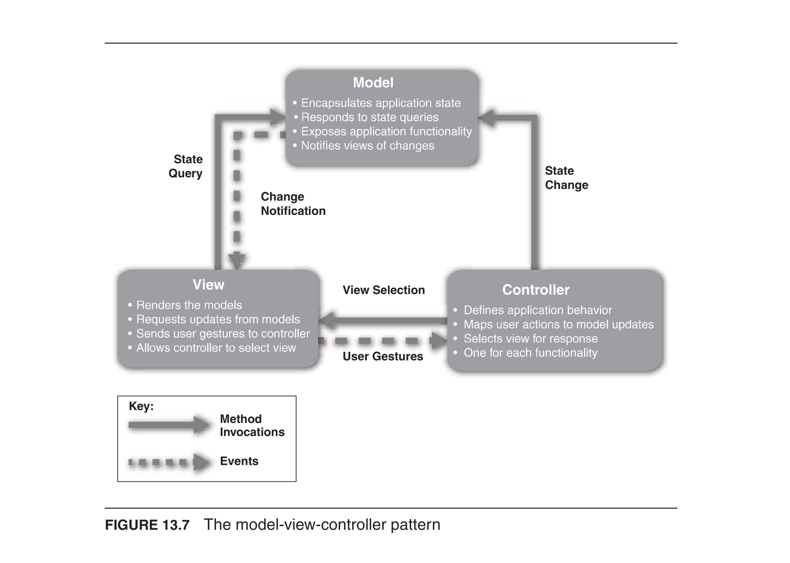
[Bass13] §13.2 Model-View-Controller Pattern
When two applications communicate via Messaging, the communication is one-way: Messages travel on a Message Channel in a single direction, from sender to receiver, and this asynchronous transmission makes delivery more reliable while decoupling the two parties. Yet communication often needs to be two-way — a function call returns a value, a query returns results, a notification may want an acknowledgment. The question is how to get a response back from the receiver when messaging itself is one-way.
두 애플리케이션이 Messaging을 통해 통신할 때 그 통신은 단방향입니다. Messages는 Message Channel을 따라 한 방향, 즉 송신자에서 수신자로만 이동하며, 이러한 비동기 전송은 전달을 더 신뢰성 있게 만들고 두 당사자를 분리(decouple)합니다. 그러나 통신은 종종 양방향이어야 합니다. 함수 호출은 반환값을 받고, 질의는 결과를 받으며, 알림은 확인 응답을 원할 수 있습니다. 문제는 메시징 자체가 단방향일 때 수신자로부터 어떻게 응답을 받느냐는 것입니다.
The pattern sends a pair of Request-Reply messages, each on its own channel, with two participants: a Requestor that sends a request message and waits for a reply, and a Replier that receives the request and responds with a reply message. The request channel can be a Point-to-Point Channel or a Publish-Subscribe Channel, depending on whether the request should be broadcast to all interested parties or processed by only a single consumer. The reply channel, however, is almost always point-to-point, because it usually makes no sense to broadcast replies — they should be returned only to the requestor.
이 패턴은 Request-Reply 메시지 한 쌍을 각각 자신의 채널 위로 보내며, 두 참여자가 있습니다. Requestor는 요청 메시지를 보내고 응답을 기다리며, Replier는 요청을 받아 응답 메시지로 회신합니다. 요청 채널(request channel)은 요청을 관심 있는 모든 대상에게 방송할지 아니면 단일 소비자만 처리할지에 따라 Point-to-Point Channel 또는 Publish-Subscribe Channel이 될 수 있습니다. 반면 응답 채널(reply channel)은 거의 항상 점대점입니다. 응답을 방송하는 것은 보통 의미가 없으며, 응답은 오직 요청자에게만 반환되어야 하기 때문입니다.
When a caller performs a Remote Procedure Invocation, its thread must block while waiting for the response. With Request-Reply the requestor has two approaches. In Synchronous Block, a single thread sends the request, blocks (as a Polling Consumer) to wait for the reply, then processes it; this is simple to implement, but if the requestor crashes it has difficulty reestablishing the blocked thread, and a blocked request thread implies that there is only one outstanding request or that the reply channel is private to that thread. In Asynchronous Callback, one thread sends the request and sets up a callback while a separate thread listens for replies and invokes the callback to reestablish the caller's context and process the reply; this lets multiple outstanding requests share a single reply channel and reply thread, and recovery after a crash is just restarting the reply thread, at the added complexity of the callback mechanism.
호출자가 Remote Procedure Invocation을 수행하면 그 스레드는 응답을 기다리는 동안 블록(block)되어야 합니다. Request-Reply에서 요청자는 두 가지 접근법을 가집니다. Synchronous Block에서는 단일 스레드가 요청을 보내고 (Polling Consumer로서) 블록되어 응답을 기다린 뒤 처리합니다. 구현은 단순하지만 요청자가 충돌하면 블록된 스레드를 복구하기 어렵고, 블록된 요청 스레드는 미처리 요청이 하나뿐이거나 응답 채널이 그 스레드 전용임을 의미합니다. Asynchronous Callback에서는 한 스레드가 요청을 보내고 콜백을 설정하며, 별도의 스레드가 응답을 수신하여 콜백을 호출해 호출자의 컨텍스트를 복원하고 응답을 처리합니다. 이 방식은 여러 미처리 요청이 하나의 응답 채널과 응답 스레드를 공유하게 하고, 충돌 후 복구는 응답 스레드를 재시작하는 것뿐이지만, 콜백 메커니즘이라는 추가 복잡성이 따릅니다.
The two reply-channel options above correspond to how the reply is routed: a private (per-requestor) reply channel reserved for a single outstanding request, or a single shared reply channel over which a callback-based requestor handles many concurrent requests. (The requestor specifies where replies should go via a Return Address, and replies are matched to their originating requests via a Correlation Identifier.)
위의 두 응답 채널 옵션은 응답이 라우팅되는 방식에 대응합니다. 하나의 미처리 요청을 위해 예약된 (요청자별) 전용 응답 채널이거나, 콜백 기반 요청자가 여러 동시 요청을 처리하는 하나의 공유 응답 채널입니다. (요청자는 Return Address를 통해 응답이 어디로 가야 하는지를 지정하며, 응답은 Correlation Identifier를 통해 그것을 발생시킨 요청과 매칭됩니다.)
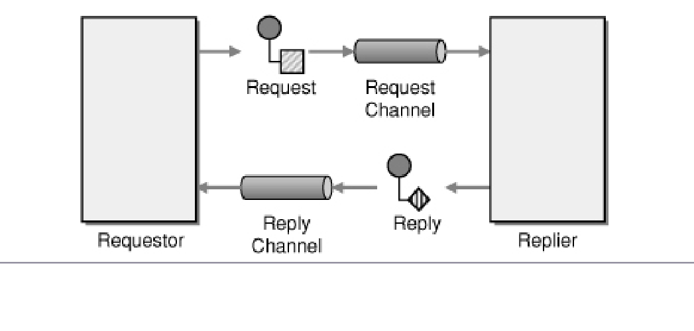
[Hohpe03] Request-Reply (sync over async)
An enterprise is using Messaging to integrate applications. If a receiver gets a message it cannot process, it should move that invalid message to an Invalid Message Channel — but the question here is different: what should the messaging system do with a message it cannot deliver to the receiver in the first place?
어떤 기업이 애플리케이션을 통합하기 위해 Messaging을 사용하고 있습니다. 수신자가 처리할 수 없는 메시지를 받으면 그 무효 메시지를 Invalid Message Channel로 옮겨야 합니다. 그러나 여기서의 질문은 다릅니다. 메시징 시스템이 애초에 수신자에게 전달조차 할 수 없는 메시지를 어떻게 처리해야 하는가입니다.
There are many reasons the messaging system may be unable to deliver a message: the message's channel may not be configured properly; the channel may be deleted after the message is sent but before it is delivered or received; the message may expire before it can be delivered (see Message Expiration), and even a message without an explicit expiration may time out if it cannot be delivered for a very long time; a message whose selection value all Selective Consumers ignore will never be read and may eventually die; or the message may have something wrong in its header that prevents successful delivery.
메시징 시스템이 메시지를 전달하지 못하는 이유는 여러 가지입니다. 메시지의 채널이 제대로 구성되지 않았을 수 있고, 메시지가 보내진 뒤 전달되거나 수신되기 전에 채널이 삭제될 수 있으며, 메시지가 전달되기 전에 만료될 수 있습니다(Message Expiration 참조). 명시적 만료가 없는 메시지조차 아주 오랫동안 전달되지 못하면 시간 초과될 수 있습니다. 모든 Selective Consumers가 무시하는 선택값을 가진 메시지는 결코 읽히지 않고 결국 죽을 수 있으며, 헤더에 문제가 있어 성공적으로 전달되지 못할 수도 있습니다.
Once the system determines it cannot deliver a message, it must do something with it: leaving it in place clutters the system, returning it to the sender fails because the sender is not a receiver and cannot detect deliveries, and silently deleting it may cause a problem for a sender that expects delivery. So when a messaging system determines it cannot or should not deliver a message, it may elect to move the message to a Dead Letter Channel. How this works depends on the specific messaging system's implementation, if it provides one at all; the channel may be called a “dead message queue” or “dead letter queue.” Typically each machine has its own local Dead Letter Channel, so a message that dies can be moved from one local queue to another without networking uncertainties, which also records which machine the message died on; the system may additionally record the original channel on which the message was to be delivered.
시스템이 메시지를 전달할 수 없다고 판단하면 그것을 어떻게든 처리해야 합니다. 그대로 두면 시스템을 어지럽히고, 송신자에게 반환하는 것은 송신자가 수신자가 아니어서 전달을 감지할 수 없으므로 실패하며, 조용히 삭제하면 전달을 기대하는 송신자에게 문제를 일으킬 수 있습니다. 따라서 메시징 시스템이 메시지를 전달할 수 없거나 전달해서는 안 된다고 판단하면 그 메시지를 Dead Letter Channel로 옮기기로 할 수 있습니다. 이것이 어떻게 동작하는지는 (제공한다면) 특정 메시징 시스템의 구현에 달려 있으며, 이 채널은 “데드 메시지 큐(dead message queue)” 또는 “데드 레터 큐(dead letter queue)”로 불릴 수 있습니다. 일반적으로 각 머신은 자체 로컬 Dead Letter Channel을 가지므로, 죽은 메시지는 네트워킹 불확실성 없이 한 로컬 큐에서 다른 로컬 큐로 옮겨질 수 있고, 이는 메시지가 어느 머신에서 죽었는지도 기록합니다. 시스템은 추가로 메시지가 전달되기로 했던 원래 채널을 기록할 수도 있습니다.
The difference between a dead message and an invalid one is that the messaging system cannot successfully deliver what it deems a dead message, whereas an invalid message is properly delivered but cannot be processed by the receiver. Deciding to move a message to the Dead Letter Channel is an evaluation of the message's header by the messaging system, while the receiver moves a message to an Invalid Message Channel based on its body or particular header fields. To the receiver, dead-message handling seems automatic, whereas it must handle invalid messages itself. As an example, in a stock trading system a requestor sets a trade request's Message Expiration to five minutes; if the system cannot deliver the request, or the trading application does not read it off the channel, in time, the message is taken off the trade request channel and put on the Dead Letter Channel, and the trading system may monitor its Dead Letter Channels to determine if it is missing trades — aiding debugging and diagnosis.
데드 메시지와 무효 메시지의 차이는, 메시징 시스템이 데드 메시지로 간주한 것은 성공적으로 전달할 수 없는 반면, 무효 메시지는 제대로 전달되었으나 수신자가 처리할 수 없다는 점입니다. 메시지를 Dead Letter Channel로 옮길지 결정하는 것은 메시징 시스템이 메시지의 헤더를 평가하는 일인 반면, 수신자는 메시지의 본문이나 관심 있는 특정 헤더 필드를 근거로 메시지를 Invalid Message Channel로 옮깁니다. 수신자에게 데드 메시지 처리는 자동으로 보이지만, 무효 메시지는 수신자가 직접 처리해야 합니다. 예를 들어 주식 거래 시스템에서 요청자는 거래 요청의 Message Expiration을 5분으로 설정합니다. 시스템이 제때 요청을 전달하지 못하거나 거래 애플리케이션이 채널에서 그것을 읽어가지 못하면, 메시지는 거래 요청 채널에서 제거되어 Dead Letter Channel에 놓이며, 거래 시스템은 자신의 Dead Letter Channels를 모니터링하여 거래를 놓치고 있는지 파악할 수 있습니다. 이는 디버깅과 진단에 도움이 됩니다.
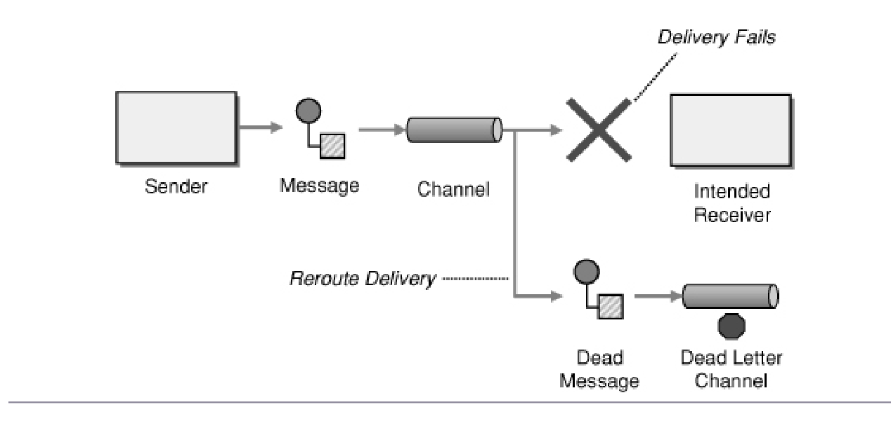
[Hohpe03] Dead Letter Channel
This excerpt from Chapter 9 introduces message-driven and event-driven architectures, contrasting them with REST and RPC. It argues that asynchronous messaging avoids the cascading failures caused by temporal coupling, and explores how events flow over a message bus to coordinate subsystems through choreography and orchestration.
9장의 이 발췌문은 메시지 기반(message-driven) 및 이벤트 기반(event-driven) 아키텍처를 소개하며 이를 REST, RPC와 대비합니다. 비동기 메시징(asynchronous messaging)이 시간적 결합(temporal coupling)으로 인한 연쇄 장애를 피한다고 주장하며, 이벤트(event)가 메시지 버스(message bus)를 통해 흘러 코레오그래피(choreography)와 오케스트레이션(orchestration)으로 하위 시스템을 조율하는 방식을 다룹니다.
A message-driven architecture emphasizes sending and receiving messages throughout the system. It has been chosen less often than REST and RPC because those approaches resemble familiar procedure calls and method invocations. However, the author argues REST and RPC are brittle mechanisms: unlike calls within a single programming language, REST-over-HTTP and RPC are very likely to fail due to network and remote service failures.
메시지 기반 아키텍처는 시스템 전반에서 메시지를 주고받는 것을 강조합니다. REST와 RPC는 익숙한 프로시저 호출 및 메서드 호출과 유사해 더 자주 선택되어 왔지만, 저자는 이들이 취약한(brittle) 메커니즘이라고 주장합니다. 단일 프로그래밍 언어 내의 호출과 달리, REST-over-HTTP와 RPC는 네트워크 및 원격 서비스 장애로 인해 실패할 가능성이 매우 높습니다.
With REST and RPC, the temporal coupling between one remote service and another tends to cause a complete failure of the client service when a failure occurs; the more remote services involved in a use case, the worse the problem becomes. As Leslie Lamport put it, a distributed system is one that prevents you from working because of the failure of a machine you had never heard of.
REST와 RPC에서는 한 원격 서비스와 다른 서비스 사이의 시간적 결합(temporal coupling) 때문에, 장애가 발생하면 클라이언트 서비스 전체가 실패하는 경향이 있습니다. 하나의 유스케이스에 관여하는 원격 서비스가 많을수록 문제는 심각해집니다. Leslie Lamport의 말처럼, 분산 시스템이란 들어본 적도 없는 기계의 고장 때문에 당신의 작업이 멈추는 시스템입니다.
Such cascading failures are avoided when systems use asynchronous messaging, because requests and responses are temporally decoupled. This relaxes the temporal dependencies across subsystems in a choreographed event-driven process. The author clarifies that events capturing and communicating business interests are generally a form of message, and that message-driven processes are a superset of event-driven processes.
시스템이 비동기 메시징(asynchronous messaging)을 사용하면 요청과 응답이 시간적으로 분리(temporally decoupled)되므로 이러한 연쇄 장애를 피할 수 있습니다. 이는 코레오그래피 기반 이벤트 기반 프로세스에서 하위 시스템 간의 시간적 의존성을 완화합니다. 저자는 비즈니스 관심사를 포착하고 전달하는 이벤트가 일반적으로 메시지의 한 형태이며, 메시지 기반 프로세스가 이벤트 기반 프로세스를 포함하는 상위 집합이라고 설명합니다.
Events that occur in a given subsystem are made available to other subsystems via a message bus. In the example (Figure 9.1), events such as Application Submitted travel over the bus and are translated into commands like Assess Risk or Calculate Rate that drive each subsystem's work, eventually producing a Rate Calculated event.
특정 하위 시스템에서 발생한 이벤트는 메시지 버스(message bus)를 통해 다른 하위 시스템에 제공됩니다. 예시(그림 9.1)에서 Application Submitted 같은 이벤트는 버스를 따라 이동하여 Assess Risk나 Calculate Rate 같은 커맨드(command)로 변환되어 각 하위 시스템의 작업을 구동하고, 최종적으로 Rate Calculated 이벤트를 생성합니다.
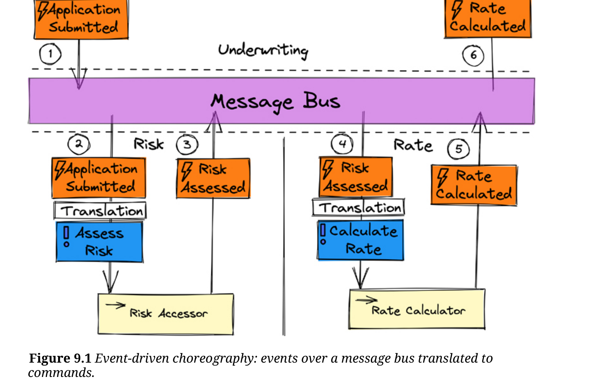
Choreography is a decentralized style of process management: events are published via messaging, and each subsystem context decides whether an event is relevant and, if so, applies it to its state, possibly emitting further events. It is simple to understand and most practical when processes have only a few steps. Its disadvantages are that a stalled process is hard to diagnose, event dependencies become coupled to subsystems that do not own the events and must be subjectively interpreted, and dependencies can become tangled as complexity grows.
코레오그래피(choreography)는 분산형 프로세스 관리 방식입니다. 이벤트가 메시징을 통해 발행되면, 각 하위 시스템 컨텍스트가 해당 이벤트가 자신과 관련 있는지 판단하고 관련이 있으면 자신의 상태에 적용하며, 필요하면 추가 이벤트를 방출합니다. 이해하기 쉽고 단계가 적은 프로세스에 가장 적합합니다. 단점은 프로세스가 멈췄을 때 원인 진단이 어렵고, 이벤트 의존성이 이벤트를 소유하지 않은 하위 시스템에 결합되어 주관적으로 해석되어야 하며, 복잡도가 커질수록 의존성이 얽힐 수 있다는 점입니다.
Orchestration uses a centralized process manager (a Saga) that receives events from subsystems and then creates command messages driving subsequent steps. Its advantage is reduced cross-subsystem dependencies, since the orchestrator owns the entire event-to-command translation. The orchestrator can be a central point of failure (usually mitigated by scalability and failover), may become a change bottleneck, and can be overkill for simple processes; it must drive process steps only and not become a dungeon for business logic.
오케스트레이션(orchestration)은 중앙집중형 프로세스 관리자(사가, Saga)를 사용합니다. 이 관리자는 하위 시스템들로부터 이벤트를 받아 후속 단계를 구동하는 커맨드 메시지를 생성합니다. 장점은 오케스트레이터가 이벤트-커맨드 변환을 전적으로 책임지므로 하위 시스템 간 의존성이 줄어든다는 것입니다. 오케스트레이터는 단일 장애 지점이 될 수 있으나(보통 확장성과 페일오버로 완화됨), 변경의 병목이 될 수 있고 단순한 프로세스에는 과할 수 있습니다. 오케스트레이터는 오직 프로세스 단계를 구동하는 데만 쓰여야 하며 비즈니스 로직의 소굴이 되어서는 안 됩니다.
A message-driven architecture is also a Reactive architecture, because components remain passive until message stimuli occur and then react to them, in contrast to imperative code driven by REST/RPC calls. Reactive is defined by four primary characteristics: responsive, resilient, elastic, and message-driven.
메시지 기반 아키텍처는 리액티브(Reactive) 아키텍처이기도 합니다. REST/RPC 호출로 구동되는 명령형 코드와 달리, 컴포넌트들은 메시지 자극이 발생하기 전까지 수동적으로 머물다가 자극에 반응하기 때문입니다. 리액티브는 응답성(responsive), 탄력성(resilient), 유연성(elastic), 메시지 기반(message-driven)이라는 네 가지 주요 특성으로 정의됩니다.
In the example, six steps across three subsystem contexts (Underwriting, Risk, Rate) collectively produce the calculated rate to quote a premium. Underwriting is blissfully unaware of the details and is simply informed at some future time that a quotable rate is available. The outcome might take 2 or 12 seconds; there is no failure from a preconfigured 5-second timeout (which would govern a REST request). While 12 seconds is not an acceptable long-term SLA, it is acceptable in the face of full failure and recovery of the Risk or Rate subsystem on different cloud infrastructure or region — a pathway that neither ordinary REST nor RPC would survive.
예시에서는 세 하위 시스템 컨텍스트(Underwriting, Risk, Rate)에 걸친 여섯 단계가 함께 보험료 견적을 위한 계산된 요율을 만들어냅니다. Underwriting은 세부 과정을 전혀 알지 못한 채, 미래의 어느 시점에 견적 가능한 요율이 준비되었다는 통보만 받습니다. 결과는 2초가 걸릴 수도 12초가 걸릴 수도 있으며, (REST 요청을 좌우했을) 사전 설정된 5초 타임아웃으로 인한 실패가 없습니다. 12초가 장기적으로 수용 가능한 SLA는 아니지만, Risk나 Rate 하위 시스템이 완전히 실패한 뒤 다른 클라우드 인프라나 리전에서 복구되는 상황에서는 수용 가능합니다. 이는 일반적인 REST나 RPC라면 견뎌내지 못할 경로입니다.
[Vernon21] Chapter 9 — introducing EDA
In the microservice architecture style, backend services are typically activated through one of three connectors: an HTTP call to a REST service, an RPC-like call (e.g., gRPC or GraphQL), or an asynchronous message sent through a queue in a message broker. The first two are usually synchronous, whereas adapting services to connect to and receive messages from a queue/topic yields an event-driven architecture. The letter E in IDEALS reminds designers to strive for event-driven microservices, which better meet today's scalability and performance needs.
마이크로서비스 아키텍처 스타일에서 백엔드 서비스는 보통 세 가지 커넥터 중 하나로 활성화됩니다: REST 서비스로의 HTTP 호출, (gRPC나 GraphQL 같은) RPC 유형 호출, 또는 메시지 브로커의 큐를 거치는 비동기 메시지입니다. 앞의 두 가지는 대개 동기식이며, 서비스가 큐/토픽에 연결해 메시지를 수신하도록 조정하면 이벤트 기반 아키텍처가 됩니다. IDEALS의 글자 E는 오늘날의 확장성·성능 요구를 더 잘 충족하는 이벤트 기반 마이크로서비스를 지향하라는 의미입니다.
Services often need to call others, forming a service composition, and these interactions are frequently synchronous, with HTTP calls being the most common option. If instead the participating services are created or adapted to connect and receive messages from a queue/topic, the result is an event-driven architecture. The author treats message-driven and event-driven interchangeably to mean asynchronous communication over the network using a queue/topic from a message broker product such as Apache Kafka, RabbitMQ, or Amazon SNS.
서비스는 다른 서비스를 호출해 서비스 컴포지션을 구성하는 경우가 많으며, 이러한 상호작용은 흔히 동기식이고 HTTP 호출이 가장 일반적인 방식입니다. 대신 참여 서비스들을 큐/토픽에 연결해 메시지를 수신하도록 만들거나 조정하면 이벤트 기반 아키텍처가 됩니다. 저자는 메시지 기반과 이벤트 기반을 같은 의미로 사용하며, 이는 Apache Kafka, RabbitMQ, Amazon SNS 같은 메시지 브로커 제품의 큐/토픽을 이용한 네트워크상의 비동기 통신을 뜻합니다.
An important benefit of an event-driven architecture is improved scalability and throughput. This stems from the fact that message senders are not blocked waiting for a response, and the same message/event can be consumed in parallel by multiple receivers in a publish-subscribe fashion.
이벤트 기반 아키텍처의 중요한 이점은 확장성과 처리량의 향상입니다. 이는 메시지 발신자가 응답을 기다리며 차단되지 않고, 동일한 메시지/이벤트를 여러 수신자가 발행-구독(publish-subscribe) 방식으로 병렬 소비할 수 있다는 사실에서 비롯됩니다.
The E in IDEALS calls for modeling event-driven microservices because they are more likely to meet today's scalability and performance requirements. This design also promotes loose coupling, since the sending and receiving microservices are independent and do not know about each other. Reliability improves too, because the design can cope with temporary outages of microservices, which can later catch up by processing the messages that were queued up.
IDEALS의 E는 이벤트 기반 마이크로서비스를 모델링하라고 요구하는데, 이는 오늘날의 확장성·성능 요구를 충족할 가능성이 더 높기 때문입니다. 이 설계는 또한 느슨한 결합(loose coupling)을 촉진하는데, 발신·수신 마이크로서비스가 서로 독립적이며 상대를 알지 못하기 때문입니다. 신뢰성도 향상되는데, 마이크로서비스의 일시적 장애에 대처할 수 있고 장애가 복구되면 큐에 쌓인 메시지를 처리하며 따라잡을 수 있기 때문입니다.
Event-driven microservices—also known as reactive microservices—present challenges. Because processing is activated asynchronously and happens in parallel, designs may require synchronization points and correlation identifiers. The design must account for faults and lost messages via correction events, and mechanisms for undoing data changes such as the Saga pattern are often necessary. For user-facing transactions carried over an event-driven architecture, the user experience must be carefully conceived to keep the end-user informed of progress and mishaps.
이벤트 기반 마이크로서비스(리액티브 마이크로서비스라고도 함)는 과제를 안고 있습니다. 처리가 비동기로 활성화되어 병렬로 일어나므로, 설계에는 동기화 지점과 상관 식별자(correlation identifier)가 필요할 수 있습니다. 설계는 보정 이벤트(correction event)를 통해 결함과 메시지 손실을 고려해야 하며, 사가 패턴(Saga pattern)처럼 데이터 변경을 되돌리는 메커니즘이 종종 필요합니다. 이벤트 기반 아키텍처로 처리되는 사용자 대면 트랜잭션의 경우, 진행 상황과 문제를 최종 사용자에게 알리도록 사용자 경험을 신중히 설계해야 합니다.
[Merson21] — section "Event-Driven" & subsection "Event-driven microservice"
This optional reading collects excerpts from Millett & Tune introducing the core building blocks of Domain-Driven Design (DDD). It explains how the problem domain is partitioned and modeled, how a shared language and context boundaries keep models meaningful, and how tactical patterns such as entities, value objects, aggregates, domain services, domain events, and repositories express domain logic in code. It is marked OPTIONAL in the syllabus.
이 선택 자료는 Millett & Tune의 발췌문으로, 도메인 주도 설계(Domain-Driven Design, DDD)의 핵심 구성 요소를 소개한다. 문제 도메인을 어떻게 분할하고 모델링하는지, 공유 언어와 컨텍스트 경계가 어떻게 모델을 의미 있게 유지하는지, 그리고 엔티티, 값 객체, 애그리거트, 도메인 서비스, 도메인 이벤트, 리포지토리 같은 전술적 패턴이 도메인 로직을 코드로 표현하는 방법을 설명한다. 이 자료는 강의 계획서에서 선택(OPTIONAL)으로 표시되어 있다.
A problem domain is the subject area for which you build software; DDD stresses focusing on the domain above all else, with domain experts collaborating with the development team. Large domains are partitioned into subdomains to manage complexity. Subdomains are abstract areas of capability and business process (not the org chart), and dividing the problem lets smaller models be created within each subdomain instead of one large model.
문제 도메인은 소프트웨어를 만드는 대상 주제 영역으로, DDD는 무엇보다 도메인에 집중할 것을 강조하며 도메인 전문가가 개발팀과 협업한다. 큰 도메인은 복잡성을 관리하기 위해 서브도메인으로 분할된다. 서브도메인은 (조직도가 아니라) 추상적인 역량과 업무 프로세스 영역이며, 문제를 나누면 하나의 큰 모델 대신 각 서브도메인 안에서 더 작은 모델을 만들 수 있다.
Subdomains fall into types. Generic domains do not define the application and are common to any enterprise (e.g., reporting, notifications). Core domains distinguish the company's unique offering and give competitive edge — they are the reason you write the software yourself. Supporting domains are enablers for the core domain and the system. Technical concerns (security, audit, logging) should be kept out of problem-space analysis.
서브도메인은 유형으로 나뉜다. 일반 도메인은 애플리케이션을 정의하지 않으며 어느 기업에나 공통적이다(예: 리포팅, 알림). 핵심 도메인은 회사의 고유한 제품을 차별화하고 경쟁 우위를 제공하며, 소프트웨어를 직접 개발하는 이유가 된다. 지원 도메인은 핵심 도메인과 시스템을 가능하게 하는 조력자이다. 보안, 감사, 로깅 같은 기술적 관심사는 문제 공간 분석에서 배제해야 한다.
In the solution space a software model is built for each subdomain. It is not a model of real life but an abstraction satisfying business use cases while retaining the domain's rules and logic. The domain model sits at the center of DDD: it begins as an analysis model formed during knowledge-crunching sessions between developers and business experts, represents a view (not reality) of the domain, and must constantly evolve to stay useful and valid.
솔루션 공간에서는 각 서브도메인마다 소프트웨어 모델이 구축된다. 이는 실제 현실의 모델이 아니라, 도메인의 규칙과 로직을 유지하면서 비즈니스 유스케이스를 충족하기 위한 추상화이다. 도메인 모델은 DDD의 중심에 있으며, 개발자와 비즈니스 전문가 간의 지식 정제(knowledge-crunching) 세션을 통해 분석 모델로 시작되고, 도메인의 현실이 아닌 하나의 관점을 나타내며, 유용하고 유효하게 유지되도록 끊임없이 진화해야 한다.
Models are built through collaboration of domain experts and the team using an ever-evolving shared language called the ubiquitous language (UL). The UL connects the software model to the conceptual analysis model; the model is described in this shared language and the diagrams the team sketches, and the code implementation is bound to the analysis model through the same language.
모델은 끊임없이 진화하는 공유 언어인 유비쿼터스 언어(UL)를 사용하여 도메인 전문가와 팀의 협업으로 구축된다. UL은 소프트웨어 모델을 개념적 분석 모델과 연결하며, 모델은 이 공유 언어와 팀이 그리는 다이어그램으로 기술되고, 코드 구현은 동일한 언어를 통해 분석 모델과 묶인다.
Large applications have multiple models, ideally one per subdomain (though some may span subdomains). When models are combined without a clear context they blur and lose explicitness. A model is therefore bound to a specific context, a bounded context, defined by the team's language and physical artifacts. Bounded contexts keep models consistent and meaningful, isolate them from third-party code, and their diligent use is essential to success with DDD.
큰 애플리케이션에는 여러 모델이 존재하며 이상적으로는 서브도메인마다 하나씩 있다(일부는 여러 서브도메인에 걸칠 수 있다). 명확한 컨텍스트 없이 모델이 결합되면 모호해지고 명료성을 잃는다. 따라서 모델은 팀의 언어와 물리적 산출물로 정의되는 특정 컨텍스트, 즉 바운디드 컨텍스트에 묶인다. 바운디드 컨텍스트는 모델을 일관되고 의미 있게 유지하고 서드파티 코드로부터 격리하며, 이를 성실히 활용하는 것이 DDD 성공에 필수적이다.
An entity represents a domain concept defined by its identity rather than its attributes. Its identity stays fixed throughout its lifecycle while attributes may change, so entities are mutable; in code, identity-based equality is often achieved by overriding equality operations. A product is an example: its unique identity is set once, but its description, price, and so on can change many times.
엔티티는 속성이 아니라 정체성(identity)으로 정의되는 도메인 개념을 나타낸다. 정체성은 수명 주기 동안 고정되지만 속성은 변할 수 있으므로 엔티티는 가변적이며, 코드에서는 동등성 연산을 재정의하여 정체성 기반 동등성을 구현하는 경우가 많다. 제품이 그 예로, 고유 정체성은 한 번 설정되면 바뀌지 않지만 설명, 가격 등은 여러 번 변경될 수 있다.
Value objects represent concepts known only by their characteristics and used as descriptors; they have no conceptual identity and are defined and compared by their attributes. They need no identity because they are always associated with another object and understood within its context (e.g., an order's shipping address has no meaning detached from the order). Value objects are immutable — once constructed their state never changes — money being a classic example.
값 객체는 오직 특성으로만 알려지며 서술자로 사용되는 개념을 나타낸다. 개념적 정체성이 없고 속성으로 정의·비교된다. 항상 다른 객체와 연관되어 그 컨텍스트 안에서 이해되므로 정체성이 필요 없다(예: 주문에서 분리된 배송 주소는 의미가 없다). 값 객체는 불변이어서 한 번 생성되면 상태가 변하지 않으며, 화폐가 대표적인 예이다.
Entities and value objects form complex relationships that must satisfy invariants. Treating a large object graph as one whole is hard and hurts consistency, concurrency, and performance. The Aggregate pattern splits models by invariants into groups of entities and value objects treated as a conceptual whole. Relationships between aggregate roots should reference another root by its ID, not the object itself, keeping boundaries clear and avoiding loading large unneeded graphs.
엔티티와 값 객체는 불변식(invariant)을 충족해야 하는 복잡한 관계를 형성한다. 큰 객체 그래프를 하나의 전체로 다루면 일관성, 동시성, 성능이 어려워진다. 애그리거트 패턴은 모델을 불변식 기준으로 나누어 하나의 개념적 전체로 취급되는 엔티티·값 객체 그룹으로 묶는다. 애그리거트 루트 간의 관계는 객체 자체가 아니라 다른 루트의 ID를 참조해야 하며, 이로써 경계를 명확히 하고 불필요한 큰 그래프 로딩을 피한다.
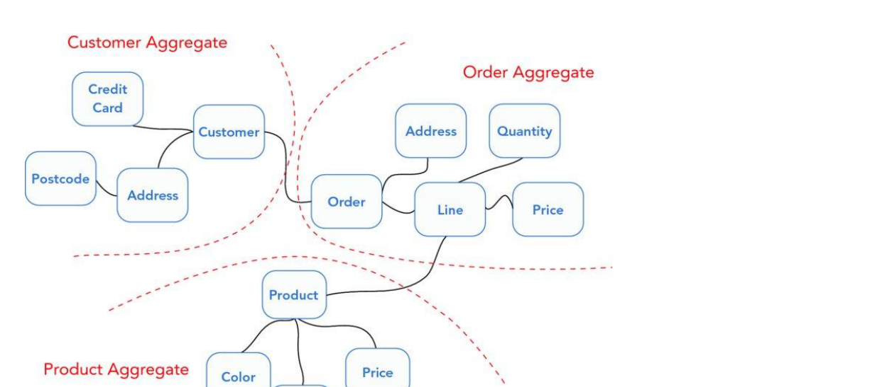
Domain services encapsulate domain logic that is not naturally modeled as an entity or value object; they have no identity or state and orchestrate business logic using entities and value objects (e.g., a shipping-cost calculator). Application services sit above and depend on the domain: they handle infrastructural concerns (transactions, e-mail) and coordinate with the domain to carry out full business use cases, translating inputs/outputs to protect the domain and communicating with other bounded contexts via REST or messaging.
도메인 서비스는 엔티티나 값 객체로 자연스럽게 모델링되지 않는 도메인 로직을 캡슐화한다. 정체성이나 상태가 없으며 엔티티와 값 객체를 사용해 비즈니스 로직을 조율한다(예: 배송비 계산기). 애플리케이션 서비스는 도메인 위에 위치하며 도메인에 의존한다. 트랜잭션, 이메일 같은 인프라 관심사를 처리하고 도메인과 협력하여 전체 비즈니스 유스케이스를 수행하며, 입출력을 변환해 도메인을 보호하고 REST나 메시징으로 다른 바운디드 컨텍스트와 통신한다.
Domain events signify something that happened in the domain that the business cares about. They can record model changes for audit purposes or serve as communication across aggregates, since an operation on one aggregate root can have side effects beyond its boundary. Other aggregates or bounded contexts can subscribe and react — for example, adding an item to a basket raises an event that the recommendations context listens for — giving a more natural flow of communication that focuses on the when and avoids tight coupling.
도메인 이벤트는 비즈니스가 관심을 갖는, 도메인에서 일어난 사건을 나타낸다. 감사 목적으로 모델 변경을 기록하거나 애그리거트 간 통신 수단으로 사용할 수 있는데, 한 애그리거트 루트에 대한 연산이 경계를 넘어 부수 효과를 낼 수 있기 때문이다. 다른 애그리거트나 바운디드 컨텍스트가 구독하여 반응할 수 있다. 예를 들어 장바구니에 항목을 담으면 이벤트가 발생하고 추천 컨텍스트가 이를 수신한다. 이는 언제(when)에 초점을 둔 더 자연스러운 통신 흐름을 제공하고 강한 결합을 피한다.
A repository manages aggregate persistence and retrieval while keeping the domain model separate from the data model. It acts as a collection-like façade hiding the storage platform and persistence framework. Repositories differ from traditional data access in three ways: they restrict access to aggregate roots only (so aggregates handle all changes and invariants), they keep a persistence-ignorant façade, and — most importantly — they define a boundary between the domain model and the data model.
리포지토리는 도메인 모델을 데이터 모델과 분리하면서 애그리거트의 영속화와 조회를 관리한다. 저장 플랫폼과 영속성 프레임워크를 숨기는 컬렉션 형태의 파사드 역할을 한다. 리포지토리는 전통적인 데이터 접근 방식과 세 가지 점에서 다르다. 애그리거트 루트에만 접근을 제한하여 모든 변경과 불변식을 애그리거트가 처리하게 하고, 영속성에 무지한 파사드를 유지하며, 가장 중요하게는 도메인 모델과 데이터 모델 사이의 경계를 정의한다.
[Millett15] selected excerpts — DDD basic concepts (OPTIONAL)